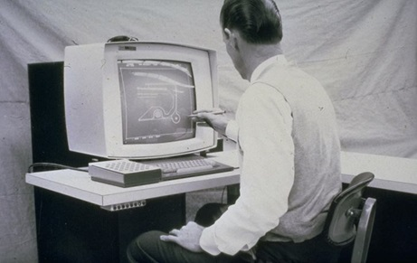
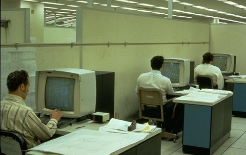
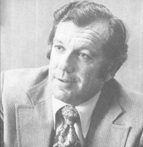
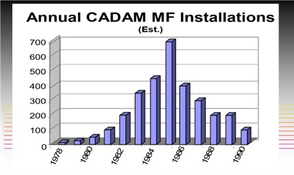
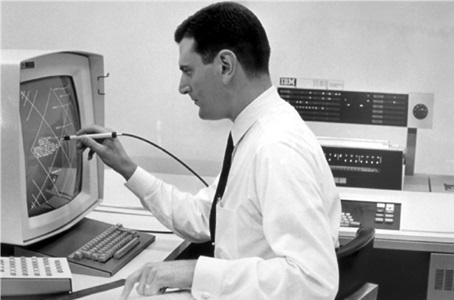
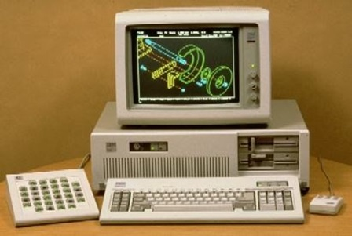
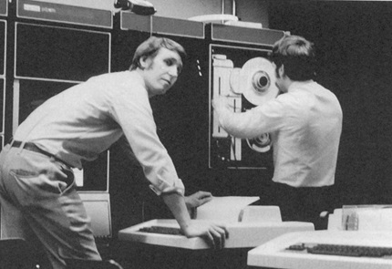
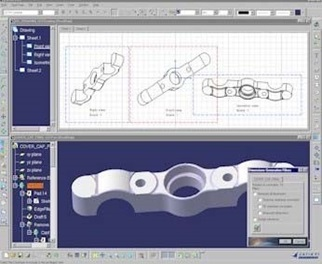

第13章：IBM, Lockheed和Dassault Systèmes
简介
这可能是本书中最复杂的章节，因为涉及到多个公司在数十年中以多种不同的产品交叉运作。它不是一个严格的按时间顺序的格式。因此，我选择了在较长的时间范围内涵盖以下一些主题，而不是将它们分成时间相关的块。此外，这实际上是关于CADAM和CATIA的故事，而不是IBM本身的故事。因此，我尽量将IBM的讨论保持在必要的最小限度，以将这些软件产品的发展情况放入上下文中。最后，尽管达索系统公司在1997年收购了SolidWorks，但该公司及其产品将在第18章单独讨论。
洛克希德公司早期的CADAM开发
CADAM（计算机图形增强设计与制造）起初是Lockheed在1965年于其加利福尼亚伯班克设施内部推出的“项目设计”主机应用程序。最初使用的是IBM 360计算机和IBM 2250图形显示终端。从一开始，主要目标就是最小化响应时间。与IBM合作，两家公司确定，如果单个操作的响应时间可以保持在0.5秒以下，就能够实现最佳生产力。尽管有一些批评者声称，这是通过执行单个命令来实现的，而每个命令所做的不如其他系统。根据这些批评者的说法，结果是使用CADAM要比使用竞争系统完成一组给定任务需要更多的步骤。第一个被分配到项目设计的工程师之一是R. Lee Whitney，他在短期在波音公司工作后于1965年晚些时候加入了Lockheed-California，并获得了波特兰州立大学数学学士学位。他在Lockheed期间还获得了计算机科学硕士和MBA学位。Whitney代表着有关CADAM的最完整的信息存储库，因为他与此产品和MICRO CADAM有30多年的关联。正如第四章所述，Lockheed在乔治亚马里埃塔的设施是早期采用CAD/CAM技术的先行者，使用了由内部开发的软件和商用系统相结合。然而，Lockheed California并不愿意跟风，因为公司认为它需要开发自己的硬件，因为足够好的图形系统尚未商业化。当IBM在1964年4月推出2250显示终端时，这种态度改变了，内部开发软件系统的计划开始了。第一台专用于计算机图形的IBM计算机系统于1966年初在伯班克安装，并于当年4月开始进行软件测试。配置包括一台IBM 360/50计算机，512KB内存，一个2250 Model II显示器，一个Model 2314磁盘驱动器和一个扁平绘图仪。最初的设计软件（直到1972年才使用CADAM名称）由六名程序员组成的团队开发，他们在Harold Bradley的指导下工作。Bradley还负责公司的数控活动和进行lofting工作的小组。几个月内，该团队已经实现了基本的设计功能，并正在制作测试数控零件。

根据惠特尼的说法，开发团队做出的最关键的决定之一是将他们正在开发的应用程序适应所拥有的计算机环境，而不是试图建立终极的设计和制造解决方案。早期的重点是支持洛克希德公司向联邦政府提出建造超音速运输机的建议。一个任务是展示软件的精确性给美国联邦航空管理局。创建了一种SST的模型，使用户可以放大放在两个座位之间的烟灰缸。当政府在1967年决定不追求超音速运输机时，结果是洛克希德公司在加利福尼亚州大规模裁员。其中一位被裁员的人是思勃·莫菲特，他是该项目的顾问之一，同时也是其他行业的先驱。
设计系统编程人员只有一个人惠特尼。
1967年底，洛克希德公司开始重建设计项目团队，很快又招了十几名程序员。外部顾问包括麻省理工学院的史蒂芬·库恩斯和洛克希德在乔治亚州的运营部门的S.H.（Chase）查森。大部分开发工作由洛克希德的工程部门资助。
最终成为CADAM的大型机实现，不得不忍受硬件和时间共享模式强加的许多限制。后者导致模型必须保持小型，否则使用大型模型的一两个用户会拖慢所有其他用户的系统。
早期的IBM图形终端如2250只有8KB的刷新内存，限制了同时显示的图形数量。IBM在1960年代中期使用的浮点格式也存在问题。它不如备选的IEEE标准精确，会截断结果而不是四舍五入。惠特尼描述了一个测试，他将100英寸的线以1度的增量旋转了180度。测试结束时，线只剩下了97英寸。因此，随后特别注意避免数值精度问题。
如上所述，像光笔这样的指向设备只对显示屏上的光做出反应。选择现有线条的末端等元素并不困难，但用户在屏幕空白区域输入坐标位置却非常困难。洛克希德公司通过在屏幕上涂满字符“R”来解决这个问题。用户可以通过将光笔指向其中一个字符来指示特定位置。每行字符只需一个刷新周期，因此用户几乎未注意到正在显示的内容。程序员称之为“字符爆炸”。
CADAM 开始成熟
布拉德利于 1968 年遭遇山岳爬行事故身亡，由让·卢卡斯接替。一个技术上的变化是增加了在 NC 工作中使用 APT 的频率。布拉德利并不喜欢 APT，而卢卡斯则主张使用它。尽管 CADAM 在经典意义上并不是三维系统，但它具有强大的数控能力。基本上，该软件使用了一种不太像传统绘图员使用的描述几何技术的两个半维技术。
该软件可便于创建一个物体的多个视图，而不需要使用临时的构造线。使用这种方法，用户可以设计窄边坡度的袖口等元素，然后编程一个五轴铣床通过一种称为形法切割的方法来切割这个袖口的两侧。
从最初的360/50开始，CADAM组逐渐提供了越来越强大的硬件。到1968年末，用于软件开发和实际工程设计的系统升级为IBM 360/91，这是IBM迄今为止建造的最强大的计算机之一。它有2MB内存（比今天用于高分辨率数字照片所需的内存少），能够实现两个MIPS的性能。计算机具有鼓、磁盘和磁带存储器，很快就支持了12个显示终端。CADAM使用128KB分区来支持每个终端，并经常同时运行几个不同的工程应用程序。
其中八个终端位于距计算机中心工程部门4500英尺的远处。这是通过由IBM提供的高速数据链路完成的，该链路采用置于氦气填充管道中的电缆。根据惠特尼的说法，远程终端的性能与靠近计算机的终端相当。3
这个项目必须忍受的一个问题是高人员流动率。惠特尼表示，CADAM花费的前50人年努力由50个不同的人完成。到1980年，与该项目有关的程序员约有100人。4在超音速运输机取消后，洛克希德加利福尼亚的重点转向了一种新的商用宽体客机L-1011。 CADAM在这个项目中被广泛使用，从放样机身表面到详细说明75000个电连接器。

工程部在主要工作时间可以使用CADAM终端，其他部门则在晚班和夜班可以使用。在十年的时间里，使用CADAM的洛克希德设计师制作了超过400,000个电路图。有时，他们每15分钟就要制作一张修订图。发布的图纸使用微缩胶片，而检查印刷品则使用静电绘图仪。 1975年，洛克希德每天使用十卷500英尺的纸——相当于一英里的检查印刷品。 CADAM公司总裁Frank Puhl曾向我描述过CADAM在L-1011项目中的有效性。“走到飞机上并向下看。地毯的贴合效果很好，而在其他飞机上地毯往往会成堆。这是因为我们使用了CADAM设计L-1011的地毯。” CADAM的一个显著缺点是缺乏任何类型的宏或用户开发语言。尽管编程人员能够在需要时提供专业代码，但这并没有为用户提供相应的工具。
CADAM的商业化
1971年，洛克希德公司遭遇了许多问题。L-1011的销售不佳，空军的C-5A计划存在巨大的成本超支问题，甚至公司的工程子公司也有问题。最终，联邦政府不得不出手提供2.5亿美元的贷款来维持洛克希德公司的运营。公司寻找增加收入的途径，最高管理层认为出售其设计软件是一个商业机会。
工程部门反对这一举措，因为他们认为软件为他们提供了竞争优势。他们被否决了，1972年，洛克希德成立了一个单独的组织来继续开发和营销软件。这也是软件正式命名为CADAM的时间点。
在洛克希德公司内部，CADAM组织的第一任领导人是弗兰克·普尔。他是一位会计师，也是此前担任副总裁的最年轻人选之一。到1972年，他已经成为财务和行政副总裁，管理着数千名下属，包括公司的计算机组织。据说，他被要求选择负责CADAM项目或领导另一个洛克希德公司的部门。他选择了CADAM。

1974年，洛克希德公司的第一批三台CADAM系统安装在洛克希德的加利福尼亚总部以外的地方，分别是为了在欧洲推广销售而在IBM巴黎安装的，以及在加州桑尼维尔的洛克希德导弹与航天公司和洛克希德乔治亚；接下来的一年，北罗普公司、格拉曼公司和达索航空（阿维昂·马塞尔·达索）也进行了购买。与大多数商用CAD系统供应商不同的是，洛克希德向客户提供源代码，使他们能够对软件进行更改。
用户很快报告使用CADAM后的显著生产率增长。
洛克希德公司在一项为空军生产伸长C141飞机的项目中采用了一个四终端系统。最初的计划预计需要将近70人工作18个月才能完成。他们只用了40人，而且在12个月内完成了工作。
在70年代中期，CADAM是一个昂贵的解决方案，许多工程经理不愿意进行投资。逐渐地，工程师的薪水增加了，每个用户的计算机硬件成本也显著下降。到1976年，经济效益看起来更好，使用开始蓬勃发展。在洛克希德加利福尼亚公司，使用的CADAM终端数量从1976年的约40个增加到1980年的超过220个。
在70年代，CADAM软件的主要目标是降低运营成本，提高系统可靠性。CADAM系统界面代码的关键元素（由迪克·贝内特和约翰·桑德斯开发）在开发交互式应用程序，如达索（Dassault）的CATIA和北罗普（Northrop）的NCAD时非常有用。
IBM成为CADAM的主要销售代理
IBM很快认识到CADAM可以帮助公司大量销售大型主机，以及众多图形终端。1978年，IBM与洛克希德签署了一份非排他性的营销协议，并建立了销售和支持人员来推广在IBM计算机系统上运行的CADAM。洛克希德还与日本的富士通和32位微型计算机制造商Perkin-Elmer签署了类似的协议。富士通的关系在日本特别是业务量上有很大收益，但Perkin-Elmer交易从未真正开始。 1982年，洛克希德成立了CADAM公司，继续开发和推广CADAM。
一些CADAM功能特色了软件的早期版本。首先，软件是开发在IBM大型计算机上运行的矢量刷新显示终端。当时，这些终端几乎没有本地计算能力，因此大多数图形操作都是由主机计算机本身完成的。由于几乎没有使软件独立于机器的激励，只有约75％的代码使用FORTRAN编写。余下的部分使用汇编语言完成，这导致图形操作非常快速。这是洛克希德程序员能够满足先前提到的0.5秒响应速度的方法之一。
在开发CADAM时，大多数其他CAD系统使用Tektronix存储管图形显示器。虽然它们可以显示大量的细分辨率数据，但无法选择擦除图像。存储管显示器具有非常有限的能力来显示菜单类型的信息。与存储管设备相比，IBM和兼容的矢量刷新显示器价格更贵，但可以选择性擦除，并可以移动图像。它们还可以快速更改菜单项列表。缺点是它们在显示有限量的数据之前很容易过载并开始闪烁。
IBM和洛克希德坚定认为矢量刷新设备总体上优于存储管显示器。选择显示实体非常快，因为这些终端使用光笔作为操作员输入设备。使用光笔，用户可以直接选择实体，而无需计算机间接匹配来自表格设备的坐标输入到绘图数据库。 CADAM结合了具有32个可编程功能框的灯箱。大多数CADAM用户熟练地使用键盘，功能框，光笔和屏幕菜单的组合来启动图形操作。
CADAM基本上是一个二维半系统，使制图员能够使用传统手工绘图技术创建复杂物体的多个视图。这使用户能够从这些正投影视图快速准备等轴测图。除了制造草图外，该软件还用于自动化数控机床编程。CADAM还可以用于计算二维截面特性。
1982年，洛克希德开始出售具备三维功能的CADAM版本。为了从模型中制作图纸，用户需要创建二维投影，然后手动添加尺寸和注释。该软件处理各种表面类型，并可用于创建有限元模型，尽管后者需要大量手动干预。自动网格化还在将来。洛克希德提供了几个支持模块，包括用于编目数据文件的数据管理模块，提供详细操作统计数据的统计数据和报告生成器，用于记录在特定项目上耗费的工时的会计信息模块，以及为用户开发的软件提供与CADAM数据库的接口的几何界面模块。
根据1982年2月的《计算机辅助设计报告》，洛克希德已经在内部使用CADAM的三维版本约四年，但拒绝向外部客户提供许可证，以保护可感知的竞争优势。到1982年初，洛克希德已经使用CADAM制作了60万张图纸，并在线存储了其中大约6万张。该系统用于设计F-117隐形战斗机（其设计曾在历史频道节目中展示）和哈勃太空望远镜。当时，公司大约50％的工具和夹具设计工作以及所有的数控编程工作都使用CADAM，尽管只有约5％是使用该软件的三维功能完成的。

1982年的硬件价格从IBM 4331 Group II计算机和两个3251显示器的约265,000美元，到IBM 3081和20个或更多终端的几百万美元不等。基本的CADAM配置，包括制图、数据管理和硬拷贝输出，成本为26,350美元，加上每月3,200美元的费用，无论运行它的IBM主机的大小如何。因此，添加额外席位只需要用户支付显示终端的价格。
如前所述，IBM显然对CADAM感兴趣，因为它有潜力帮助该公司销售大量昂贵的大型计算机和成千上万的3250和5080图形终端。早期的图表显示了多年来主机版CADAM的销售情况。大多数CADAM培训和客户支持由洛克希德提供，因为IBM没有可支持客户的培训工程师。有趣的是，当时最大的CADAM客户是IBM自己。IBM使用了一种包括其他190个客户无法获取的功能的特殊版本的CADAM。最终，其中一些功能被纳入了发布版本的软件中。《计算机辅助设计报告》在其评论中总结道：“CADAM不是最先进的软件，但它是一个高度可靠的系统，具有成功使用的悠久历史。”
IBM图形终端
为了理解IBM的主机图形终端，有必要了解这些计算机在外设方面的结构。随着System 360于1964年4月的推出，IBM开始提供名为数据通道的接口机制。（早期的IBM计算机上也有类似的设备。）这个计算机模块作为将数据传输到计算机存储器和从计算机存储器中传输数据的手段。在某种程度上，它是一个可编程单元，可以适应不同的输入/输出设备。图形终端并没有直接连接到数据通道，而是与显示控制器相互连接，显示控制器包含必要的存储器和控制逻辑，可以在显示器上生成图形图像。
IBM 2250 Model I是首台通用型IBM显示终端，于1964年4月随System 360一同推出。2250包含一个独立的显示器和图形控制器。显示器为圆形CRT，直径21英寸，可用面积为12英寸正方形。分辨率为1024 x 1024。2250是矢量刷新设备，显示命令存储在控制器的本地内存中，内存容量为4,096或8,192个8位加奇偶校验的单词。基本单元只能显示短的水平、垂直或45度线条，必须另购线条发生器方可显示任意长度任意角度的线条和较完整的图形应用。
2250的主要缺点是在显示密集图形图像时容易出现闪烁。此外，由于控制器内存的大小限制，每个图像所能包含的细节数量是有限的，虽然可以使用子程序技术来扩展该容量。可选字符发生器可在一定程度上增加显示容量。用户通过光笔和功能键盘进行交互。1974年时，带线条发生器、键盘、功能键盘和8KB内存等完整功能的2250 Model I售价超过10万美元。接下来的2250 Model III则由2840 Model II控制器驱动，后者有16,384个18位单词内存。最多可将4个2250 Model III显示器连接到2840上，这降低了每个座位的成本，约为65,000美元。

大约在1978年，IBM与纳舒厄的桑德斯联合公司签订协议，制造一种名为3250的2250替代品。3250具有更多的显示内存和更快的线条绘制速度，从而能够显示更密集的图像，或许能够显示多达8,000个单独的矢量图，无闪烁。
IBM于1983年末推出了它的第一个光栅显示图形终端和显示控制器，分别为5080和5085，交付开始于1984年初。许多图形功能现在由显示系统执行，从而使主机电脑免于这些任务。5080有单色和256色两个版本，售价分别为约22,000美元和28,000美元。这个单元保持了IBM早期的显示产品的方形1024×1024分辨率，在其他显示制造商开始销售具有长方形1280×1024视区的单元时。
虽然5080使用平板电脑而不是光笔可以模拟旧的3250，但它具有许多新功能需要新软件。过一段时间之后，CADAM和CATIA被升级以使用诸如选择性擦除单个实体而不更新整个屏幕之类的功能[6]。
1986年1月，IBM推出了取代旧型号1的新型5085显示控制器。新型号1A和型号2具有512KB的显示内存和更强的本地处理能力。型号1A的价格降至13300美元，型号2的价格降至18300美元。随后，推出了带有1.5MB内存的型号2A。
到1989年，IBM已经出货了超过50,000个5080图形终端。随着电子元件和半导体存储器的价格下降，IBM能够提高这些设备的性能并降低成本。早在1989年初，5086图形处理器就取代了早期的5085型号，具有高达两倍的三维显示性能，价格仅为11900美元，而早期5085型2A的价格为14200美元。
1989年11月，IBM推出了一个新的高性能显示系统6090。它与5080类似，但性能提高了5-10倍，价格也显著提高。介绍这个产品的新闻稿宣称它的性能是Silicon Graphics 4D/210GTX的两倍。十个浮点图形处理器每秒能够转换一百万个三维向量，或者以每秒四千万个像素显示阴影图像。阴影图像是由一个可选处理器产生的，该处理器支持多个光源和深度提示。6090还处理行业标准的1280x1024像素图像，而不是之前IBM光栅显示器所限制的1024x1024像素图像。
早期的IBM显示器要求主机计算机处理大部分显示生成工作，而现在这些工作可以由图形子系统处理。从性能的角度来看，6090是第一批能够实时旋转阴影图像的商用设备之一。有两个6090图形处理器型号。一个基本的6090系统，能够处理二维16色图形，价格为26650美元，而装备有32MB内存，能够处理16百万种颜色的复杂阴影图像的全功能系统则售价72150美元。IBM还推出了新的通道控制单元，每个通道控制单元可以处理多达192个设备，而之前的单元只能处理32个5080类显示器。
与5080不同，6090不能像下面所述那样与RT PC一起使用。它是严格的大型机设备。在推出时，唯一充分利用6090的新图形特性的软件是SDRC的CAEDS软件。估计需要一年时间才能使CADAM和CATIA充分利用这些功能。
Fastdraft和其他内部开发的CAD系统
Fastdraft是由IBM的科罗拉多州博尔德实验室在设备绘图经理Ron Giese的指导下为内部使用而开发的。使用该软件内部约8年后，该公司决定在1982年年底将其产品化，并于1983年5月开始发货。Fastdraft系统包括两个3251单色矢量刷新显示器、一个7361型处理器(基于Series 1迷你电脑)、一个29MB磁盘驱动器、一个软盘、一个HP绘图仪(重新标记为IBM设备)和绘图软件。该系统推出时的价格为99,890美元，每个座位约为50,000美元。在这个时候，大多数闭环系统的售价都超过了每个座位100,000美元。
Fastdraft是一个相当基础的绘图系统。也许它最大的缺点是小磁盘驱动器，严重限制了在线存储的图纸数量。几年后，由同一实验室开发的该软件的修订版本被卡尔玛作为Draftstation销售。(见第11章) Fastdraft还由绘图复印设备制造商Ozalid Corporation销售。
1985年1月，IBM将两个工作站的Fastdraft系统价格从99,000美元降至72,900美元，很可能是由于销售缓慢。Fastdraft一直持续到1986年3月，IBM由于销售缓慢将其停产。这个产品似乎在IBM内部没有得到多少市场支持。实际上，Fastdraft失败的原因可能在于它是基于一个更完整但更昂贵的小型计算机系统上实现的，而这些系统与AutoCAD和VersaCAD等支持竞争软件的低成本PC有关。
IBM不会放弃开发自己的CAD软件。在1986年8月，该公司推出了另一个低成本的软件包，这次是针对IBM兼容PC。这个叫做CADwrite的软件售价为1,995美元。与Fastdraft一样，它从功能上看似乎与当时的AutoCAD和VersaCAD可比，但它从来没有真正获得成功。一个问题可能是它仅支持IBM的PC上的“增强”和“专业”图形显示。这些装置有12英寸的显示器，对于严肃的绘图来说太小了。此外，IBM从来没有开发过一个能够与Autodesk已建立的经销商网络竞争的经销商网络。
在1988年底，这个丹佛小组再次尝试，这次推出了只售995美元的IBM CAD软件。计算机辅助设计报告喜欢这个软件，但评论说，IBM在建立分销网络方面需要做很多工作。这份通讯指出，这次IBM让经销商更容易添加软件功能，或许这会产生不同的效果。负面的一面是，这个软件包难以学习，与IBM当时的主流CAD产品CADAM几乎没有共同点。与其前身一样，IBM CAD也未能在市场上占据重要地位，最终市场营销责任于1991年4月转移至IBM的CADAM子公司。
其他CADAM工作站和软件解决方案
在 20 世纪 70 年代和 80 年代，制造商们试图通过市场营销各种外围设备（如磁盘驱动器、磁带驱动器和打印机）来利用 IBM 的市场主导地位，这些设备可以直接插入 IBM 主机。这些被称为插件兼容制造商或 PCMs，他们通过最小化研究和开发费用以及低开销运营来削减 IBM 的价格。这个市场的一个特殊子集是生产插件兼容图形终端。这个领域的早期领导者是 Adage、Vector General 和 Spectragraphics。
直到 1983 年，它最终推出了 5080 色彩栅格显示器，使用 IBM 图形终端的客户端仅限于使用单色矢量驱动显示器。虽然它们具有清晰的分辨率，但当用户尝试显示复杂的绘图时，它们会开始闪烁。到了 20 世纪 80 年代初，彩色栅格技术变得更加普遍。1982 年 6 月，位于圣地亚哥的 Spectragraphics 开始发运一个叫做 System 1250 的单色和彩色栅格显示器。
使用典型的 IBM 系统架构，1250 由三个组件组成，一个通道控制器连接到标准的 IBM 数据通道，一个显示控制器和显示器本身。每个通道控制器支持两个显示控制器，每个显示控制器支持多达四个显示器。1250 显示器具有 1024 x 1024 的分辨率，彩色版本支持 16 种颜色。
这些设备也能够远程工作。由于所需的所有模块较多，第一台单位的价格有点昂贵，但平均价格随着添加更多显示器而降低。单色显示器的价格为 49,850 美元，而类似的彩色单元价格从 79,000 美元到 89,000 美元不等，具体取决于所安装的内存量。随着显示器数量的增加，成本可以达到每个终端 21,000 美元左右。Spectragraphics 随后推出了一款模拟 5080 的 16 色栅格终端 DS 1080，售价为 17,900 美元。
一家新公司CGX Corporation在1982年10月宣布推出向量和栅格的IBM兼容显示器。CGX由两兄弟Ken和John Leavitt在马萨诸塞州Acton创立。John Leavitt曾是Adage的软件开发经理。公司通过将显示控制器与显示器本身结合来降低系统成本，这降低了仅有一个或两个终端的小型配置的成本。CGX的通道控制单元价格为30,000美元，可支持16个显示器，其中单色显示器售价为30,000美元，彩色栅格显示器售价为40,000美元。
Vector General不仅推出了适配插口的显示器，还推出了一套完整的CADAM系统，包括软件和12个显示器，价格为540,000美元。一旦IBM在1983年底宣布其价格极具竞争力的5080彩色栅格显示器，适配插口供应商就开始面临加大的价格压力。例如，Spectragraphics于1983年12月将其Model 1500彩色显示终端的价格从42,000美元降至仅22,000美元。
Adage在1983年8月推出了其第一款模拟IBM 3250的彩色栅格显示器。这款19英寸的4250分辨率为1280 x 1024，售价约为43,000美元。1985年1月，Adage推出了Adage Model 6080栅格显示器，其规格几乎与IBM 5080相同。单色机型起价为18,000美元，彩色机型起价为22,000美元。关于用于CADAM和CATIA的显示终端的最有趣的业务发展出现在1986年9月，当时洛克希德收购了制造IBM 5080终端的Sanders Associates。Sanders还拥有加州计算机产品（CalComp），该公司销售CAD系统系列及其最为知名的绘图仪。
CalComp于20世纪60年代末扩展到了磁盘驱动器业务，这被证明是一个财务上的灾难。该业务被一分为多样地出售给了多家公司，包括1979年卖给施乐的部分以及绘图仪和CAD活动剩余的部分被桑德斯在1979年底收购。桑德斯收购后曾经有一些关于将洛克希德的CADAM公司与CalComp合并的早期谈判，但最终没有实现。
CADAM的最严重的克隆品由Adra Systems生产。Adage是Adra Systems的早期财务支持者，于1984年7月推出了由Adra开发的、使用类似CADAM的命令菜单和图形构建技术的CADstation 2/50，售价为22,000美元。1986年1月，CADAM, Inc.对Adage和Adra提起了版权侵权诉讼。
随着时间的推移，Adra不再使用专有硬件，开始在各种UNIX工作站和IBM兼容PC上支持其类似CADAM的软件——现在被称为Cadra。到1990年，许多公司，如Sikorsky Aircraft，开始使用Cadra作为二维绘图的替代品，而不是更昂贵的CADAM。随着1990年代的发展，Cadra成为一个直接的CADAM克隆的程度越来越小，Adra自己的开发人员增加了功能和能力。
到1996年，在大约1,500个客户现场中使用了大约17,000个Cadra席位，这可能是该软件的高峰期，因为该公司开始专注于其Matrix PDM软件，公司的名称最终被更改为MatrixOne。Cadra软件于1998年出售给SofTech，该公司仍在销售该软件。详情请参阅第21章。
在1980年代晚期，5080终端业务经历了一段整合期。Adage在1987年收购了CGX（当时Auto-trol Technology的副总裁Jim Norrod担任CGX总裁[21]），尽管该业务持续亏损。1988年8月，Adage将其服务业务出售给国家计算机系统公司（NCS），后者是教育机构使用的光学扫描系统的供应商。1988年12月，NCS还收购了VG Systems（前身为Vector General）的服务业务，然后在1989年末，NCS收购了Adage和VG Systems的图形业务的余额。这基本上使得5080兼容业务中只剩下NCS和Spectragraphics两家公司。5080类型终端的全球市场约为每年16000台，IBM可能占有80％的市场份额。
与主机连接的图形终端的日子已经到头了，因为CAD行业转向了网络化的工作站。Spectragraphics积极开发了硬件和软件，使Digital、惠普、SGI、阿波罗甚至IBM的系统能够作为5080终端运行。尽管在专业环境中有用，但这从未成为一个大市场。无论是NCS还是Spectragraphics都没有尝试模仿IBM的新6090终端。NCS最终消失了，而Spectragraphics设法留下来。在放弃开发工作组协作软件的尝试后，Spectragraphics成为一家合同电子制造商[22]。
IBM进入工作站市场
到1985年，显然，从阿波罗到Silicon Graphics的工程工作站，如果IBM想在工程领域保持领先地位，就必须采取行动。在接下来的几年中，IBM推出了一系列工作站，包括RT PC和RISC System/6000。这些工作站在设计和工业界广泛使用。
Sun Microsystems、数字等公司正在迅速成为CAD应用程序首选的平台，并将在这个市场空间中成为小型计算机和主机的严肃竞争对手。长期以来，IBM一直传言正在开发一款竞争性产品，最终在1986年1月推出了RT-PC。RT-PC采用了一种名为RISC(简化指令集计算机)的新微处理器架构，大幅减少了计算机支持的机器语言指令数。IBM RISC处理器支持118个指令，而Digital的VAX系统支持304个。每个RISC指令比传统指令简单，但通常可以执行得更快。虽然可能需要更多指令来完成给定的任务，但预期总时间会更短。这是一个将持续几十年的争论。(RT代表简化指令集计算机技术。)
RT处理器是一种真正的32位设备，具有32位内存总线和32位寄存器。虚拟内存(40位)由一个名为Virtual Resource Manager的程序管理，提供对潜在数据容量为1TB的访问。在介绍时宣布了四个RT型号，价格从11700美元到19510美元不等。此外，客户还必须支付额外的3500美元，购买AIX(高级交互式执行程序)，IBM对AT&T的UNIX操作系统的实现。
有半打图形选项可用于与RT配合使用，但只有一个现有的5080适用于CAD应用程序。浮点协处理器也可用，售价1995美元。请参见图13.6。当所有这些都加在一起时，配置为CAD应用程序的RT-PC(一个配备浮点处理器、4MB内存、AIX和一个带有19英寸彩色监视器的5080显示子系统的6150型号A25)售价约为45000美元，不包括任何应用程序软件。虽然RT-PC的性能约是PC AT的两倍，但价格远比后者高得多。
RT的主要问题是与竞争系统相比速度慢。
在《计算机辅助设计报告》的一项比较中，数字公司的Microvax II速度是两倍，并且仅多花费38％。除了5080以外，RT的图形功能与竞争产品相比相对薄弱。虽然RT计划在1986年3月交付，但某些功能预计要到9月才能实现。与此同时，Sun和Apollo等公司预计将推出更高性能、价格可能更低的新系统。当时在Dataquest的Dave Burdick表示：“这对IBM是一个不错的开端，但他们还有很长的路要走。”
由于缺乏应用软件以及价格和性能问题，RT-PC的销售始于缓慢。1986年9月，IBM将价格下调了20％至32％，同时提高了机器的性能。最大内存增加到8MB，更大、更快的磁盘驱动器虽然相当昂贵，但已被加入产品线，一款新的浮点加速器也已经推出，速度比最初的设备快了三倍。相比之下，一台Apollo DN3000的性能提高了30％，成本降低了20％。
一年后的1987年2月，IBM宣布推出更快的RT-PC版本。它使用了一个10兆赫兹的处理器，要么是Motorola 68881数学协处理器，要么是可选的浮点卡，配备了一个称为Megapel的紧凑型5080图形适配器，比以前的5080适配器更便宜，并支持新的图形系统软件。新的RT在价格和性能上与Apollo DN3000差不多。然而，该产品继续遭受困境，软件供应商开始放弃它。主要问题是IBM会在性能上向前迈进一步，而竞争对手会跨越更大的差距。1988年1月，Autodesk宣布AutoCAD不再支持此平台。
尽管IBM试图开发可行的工作站产品线，并将CADAM移植到UNIX工作站，但IBM仍致力于“大型机”主机。直到1989年11月，公司才表示，大型机将是至少未来十年的关键平台，尤其是在需要控制大量工程数据库的情况下。
RS/6000让IBM工作站的运营焕发新生
RT从未获得太多的市场份额，直到1990年2月15日，IBM推出它的继任者RS/6000，才在这个领域提供了一种有竞争力的产品。当IBM想认真对待某个市场时，它可以非常认真，显然它在某些时候决定认真对待UNIX工作站市场。RS/6000在推出时由许多图形工作站和服务器组成，围绕着一个运行在20至30 MHz的九芯处理器。RS/6000不仅是一种改进的RT-PC，它是一种全新的设计，具有新的指令集、新的内存总线设计、新的I/O总线和新的图形适配器。虽然它仍被归类为RISC设计，但处理器支持184个不同的指令，而RT-PC只有118个指令。
产品系列包括多种单色和彩色显示器，分辨率为1280x1024，与竞争对手的产品相当。典型的图形工作站的价格从RS/6000-320的$19,300到RS/6000-730的$104,705不等。总体而言，RS/6000的性能已超越了以相当价格销售的竞争产品。1990年11月，该公司推出了型号550，评定为23MFLOPS，不配备图形，售价为$130,000。显然，它旨在成为计算服务器。
在软件方面，IBM利用RS/6000产品系列的推出承诺了行业标准软件。它采用了MIT的X窗口图形用户界面环境以及graPHIGS和SGI的图形语言（GL）进行应用程序开发。在1990年之后，IBM的应用程序，例如CADAM和CATIA，或第三方应用程序，例如Pro/ENGINEER、PDA PATRAN或MCS Anvil 5000，在此平台上才可用。
1990年12月推出的CATIA版本需要IBM 5086图形终端才能运行——昂贵、笨拙且表现不佳。结果是CATIA阴影图像需要几分钟才能生成，并且不太流畅。问题在于CATIA使用了低级别的图形原语来实现良好的5080系列性能。使用graPHIGS重新编写此软件所需的时间超出了想转换到RS/6000的客户的预计时间。包括RS/6000和5086终端的CATIA系统的成本超过$90,000，可能是Sun SPARCstation上Pro/ENGINEER成本的两倍。因此，IBM在RS/6000推出后一段时间继续销售基于大型机的CATIA系统。在1991年秋季，RS/6000的新一轮图形界面推出。Gt3、 Gt4和Gt4x提供了两维和三维功能，价格从$3,500到$17,000不等。在1992年，IBM将这一业务命名为高级工作站和系统部。在当年的秋季，该公司推出了一款新的高端工作站，POWERstation 580，一段时间内是最快的UNIX工作站。它是最早支持1GB主存储器的工作站之一。580的价格相当昂贵，单色模型的价格起价接近$70,000。
IBM非常直接地表示，它的目标是从1989年的2％的UNIX工作站市场份额提高到1993年相当更大的市场份额的30％。到1993年初，该公司提供的RS/6000系统的价格从不到$4,000到可达8GFLOPS性能的超级计算机不等。14年后，RS/6000服务器仍然是IBM的产品线的一部分，尽管图形工作站已被高性能PC所取代。
IBM支持PowerPC作为英特尔微处理器的替代品。在90年代初期，英特尔成为了PC微处理器首选的供应商。1991年底，IBM同意与苹果电脑和摩托罗拉合作开发一种新型微处理器，名为PowerPC。这个开发项目被称为Somerset，设在德克萨斯州奥斯汀市。PowerPC采用了IBM的Power处理器在RS/6000产品线上使用的RISC架构和摩托罗拉的88000总线架构。这三家公司还在开发一种名为Taligent的新的面向对象操作系统和一种叫做Kaleida的新的多媒体技术。总体上，目标似乎是为苹果和IBM开发PC产品线，使其不依赖英特尔或微软技术。PowerPC在PC行业中从未产生过重大影响，尽管在苹果公司广泛使用。IBM尝试销售基于PowerPC的PC，但很快就放弃了。最终PowerPC被降级为驱动RS/6000工作站和服务器。甚至在PowerPC出货之前，IBM已经在研发下一代Power Plus，预计将每个时钟周期执行的指令数翻倍。Taligent和Kaleida从未起步。
最初的PowerPC微处理器是601。它的性能大约与66-MHz Pentium芯片相当，但成本大约只有一半。它也更小，产生的热量更少。1993年秋季，IBM推出了其第一款基于PowerPC的工作站。称为POWERstation 25T，其起价为9395美元，有一台配备17英寸彩色显示器的单位。总体性能与惠普和Sun Microsystems销售的类似系统相当。
IBM尚未放弃自己的处理器架构。在首个POWERstation推出后不久，IBM宣布了一个新的高性能POWER2处理器（实际上是八个芯片而不是单片式微处理器），以及使用该处理器的几个服务器。这些被称为POWERserver。最终，IBM将RS / 6000产品线的大部分切换到PowerPC微处理器。除了用于Apple PC外，这个微处理器从未在PC市场空间中流行起来，IBM最终放弃了使用PowerPC芯片的PC支持。
1994年中期，PowerPC和POWER2系统分为IBM内部的针对终端用户和大型系统买家的不同组。低成本的POWERstation与PC产品一起作为IBM个人电脑公司的一部分，而高级工作站和系统部门更名为不太有创意的RISC System / 6000部门，并嵌入大型系统部门。不久之后，IBM宣布了许多使用PowerPC和POWER2处理器的新工作站和服务器。此外，该公司宣布将出售面向汽车造型和工业设计的高端Evans＆Sutherland Freedom系列图形。这些后期系统每个售价超过10万美元。
随着时间的推移，IBM推出了更多基于POWER2的工作站和服务器。1995年初，推出了一款67 MHz的POWER2处理器，性能可达130 SPECint92和267 SPECfp92。随着复杂立体模型的日益普及，浮点性能尤其令人印象深刻。具有64MB主存储器，1GB磁盘，GXT150M图形加速器和17英寸彩色显示器的RS / 6000 Model 3CT的目录价格为38,795美元。
专业CADAM介绍
直到1986年初，CADAM严格是一个运行在大型IBM计算机上的主机应用程序。 PC-RT的推出为CADAM公司提供了在工作站级机器上实现软件的机会，尤其是那些运行某个版本的UNIX的机器。专业CADAM与PC-RT的推出同时启动。专业CADAM软件每份售价16,000美元，绝对不是用来与Autodesk的AutoCAD竞争的。软件仅与配备5080显示器的PC-RT版本兼容。总系统价格范围从带有15英寸单色显示器的系统的50,000美元到配备顶级19英寸彩色显示器的系统的67,000美元。
专业CADAM并不仅是将主机CADAM软件移植到PC-RT平台。该软件的许多部分实际上是为这个新产品重新编写的。两个程序的数据结构是不同的，需要一个翻译程序来将数据文件从一种类型的计算机移动到另一种类型的计算机上。相比原始CADAM软件，专业CADAM实际上有几个重大改进。
- 它可以处理无限大小的模型，而CADAM模型仅限于大约20,000个字（约120KB）。
- 图形实体是双精度的，相比CADAM中使用的单精度格式更高。
- 专业版CADAM支持无限数量的视图，相比CADAM的64个视图而言。
系统管理员可以设置专业版CADAM限制模型大小并利用单精度，以便模型与主机CADAM兼容。虽然与主机软件的版本相比，专业版CADAM具有上述增强功能，但它也有一些限制。初始版本的专业版CADAM严格是一个二维设计和绘图解决方案，没有曲面建模能力。还没有可用的NC或分析模块。据计算机辅助设计报告称，该软件的预发布版本很慢，需要30秒才能缩放到一个50,000字的绘图文件。交付预计在1986年9月之前。
CADAM，Inc. 推出MICRO CADAM
1984年，洛克希德与川崎重工成立了一家名叫CADAM Systems Company (CSC) 的合资企业，旨在推广和支持CADAM在日本市场的发展。CSC意识到需要一款低成本的CADAM版本，并开始在IBM在日本销售的PS/5500个人电脑上开发MICRO CADAM，这与美国和其他地区销售的PC有很大的不同。该软件于1985年在日本推出。随后的一年，为了在美国和全球范围内销售，推出了适用于PC/AT的国际版MICRO CADAM。
国际版使用了许多类似于主机版CADAM的菜单命令，但本质上是新的软件。国际版MICRO CADAM专为配备IBM“专业”、“增强”或“3270 PC/GX”显示器的PC/AT设计。不支持类似Hercules生产的图形卡等流行显示系统。所需配置包括硬盘驱动器、数学协处理器和640KB内存，以及与CADAM使用类似的功能框。
MICRO CADAM软件加上一个用途特定的功能框的价格为8000美元。最初声明该软件将由CADAM直接销售。
不久之后，IBM宣布也将出售MICRO CADAM。由于高昂的价格、相对较弱的性能和支持的硬件范围有限，销售起步缓慢。IBM采取的一个可能是一个很大的错误决策是，只允许其直销人员销售MICRO CADAM，而不是其PC经销商，其中许多人可能已经在销售AutoCAD。
大约在同一时间，CSC推出了MICRO CADAM，麦克唐纳道格拉斯公司推出了Crossroads CAD，Intergraph收购了CNR Research的50％股权，该公司开发了一个名为C-CAD的IGDS抄袭品。由于三家主要公司都进入了PC CAD市场，计算机辅助设计报告认为AutoCAD的日子已经被数了。史蒂夫·沃尔夫在他的许多年编辑新闻通讯时常常是一个非常有洞察力的预测者，但这并不是这些时刻之一。
1986年夏天，CADAM，Inc.第一次遇到财务问题，因为年初的销售额没有像预期的那样快速增长。因此，该公司裁员了53名员工，尽管它仍在招聘熟悉实体造型的程序员等专业人员。
MICRO CADAM很难起步，很可能是因为它的价格高达8000美元。为了加速在PC CAD市场的渗透，CADAM，Inc.推出了一个新的低价套餐，名为Cornerstone。以2995美元的价格，它与AutoCAD，Computervision的Microdraft和MCS的Anvil 100MD等套餐竞争。Cornerstone取消了MICRO CADAM和主机CADAM使用的特殊功能框。此外，数据文件无法与CADAM的更昂贵版本进行交换。显然，公司在建立PC CAD市场的地位和保护其更高价值的产品之间感到矛盾。
1988年，Cornerstone升级为价格为3995美元的MICRO CADAM Plus。MICRO CADAM Plus使用Pharlap内存扩展软件来规避Microsoft的DOS操作系统的640KB限制。需要近18个月才能获得相对没有漏洞的软件版本。1989年中期推出了低成本数据管理选项MC * EDM，每个座位只需295美元。
IBM在CAD行业成为重要的参与者
根据Daratech的数据，CAD行业在1979年至1985年之间从3.4亿美元增长到35亿美元。在这六年期间，IBM的市场份额从8.8％增长到行业领先的21.3％。后者意味着IBM的与CAD相关的销售额在1985年接近7.5亿美元。读者需要清楚地了解的是，在那些年中，像Daratech这样的市场研究公司报告的收入数字包括计算机硬件和软件，而今天的数字大多只反映了软件和服务。当IBM销售一台价值120万美元的CAD系统时，它可能反映了4381台计算机和16个图形终端的100万美元，以及该系统所支持的CADAM软件的200,000美元。
然而，市场研究公司报告行业统计数据存在严重的缺陷。基本上，公司向Daratech等公司报告其收入数据。对于像Computervision和Auto-trol Technology这样的上市公司，比较它们向市场研究公司提供的数字与公司发布的财务报告是很容易的。由于几乎所有这些公司的收入都与CAD行业相关，因此数字相当准确。
对于IBM、Prime Computer和Control Data等计算机制造商来说，情况有两个方面非常不同。因为CAD系统业务只是他们总收入的一小部分，所以不可能通过公开的财务报告确认他们报告的行业数字，并且他们有很多理由认为与CAD相关的数字应尽可能大。另一个问题是，当他们销售一台价值100万美元或更多的大型计算机系统时，即使只有一小部分计算机用于运行CAD软件，他们也经常报告整个销售额与CAD相关。许多行业内部人士对计算机制造商报告的数字持怀疑态度。
到1986年初，CAD行业正在经历几个结构性变化。正如1986年4月《计算机辅助设计报告》（Computer Aided Design Report）所报道，Daratech总裁查尔斯·方迪勒（Charles Foundyller）表示：“随着通用计算机生产商的崛起，基于专用系统的厂商开始走下坡路。” 随着CAD的使用增加，公司信息技术经理开始在采购决策方面施加影响。他们通常和IBM打交道比较自在，如果IBM能够提供一个合理的解决方案，满足工程部门的基本需求，他们就会推动IBM作出决策。在许多情况下，高级工程经理很高兴让IT人员接管购买和维护这些系统的责任。那样，他们就可以集中精力开展主要任务，设计产品。方迪勒继续表示：“专用的CAD/CAM业务已经走到了终点。”
IBM在1980年代中期是一家努力应对快速变化的计算机行业挑战的公司。公司通常会让几个不同的部门开发类似的产品，希望最佳产品最终会脱颖而出。由于IBM在计算机行业是如此重要的参与者，它经常会成为自己的竞争对手。例如，有两个团队负责促销CAD系统，一个是罗伯特·蒂尔（Robert Tiel）领导的工程/科学市场开发组，另一个是迪克·伯克利（Dick Burkley）和迈克·柯尔斯（Mike Corse）领导的CAD / CAM营销支持组。随后，伯克利去了Auto-trol技术公司工作。
工程/科学市场开发（E / S MD）是确定在这个市场上竞争所需软件并管理与开发人员如洛克希德公司的CADAM等的关系的组织。 CAD / CAM营销支持为CAD销售提供技术现场支持。当这两个团队正在推动IBM CAD系统的销售时，另一个组织——国家分销部——正在鼓励其他公司将IBM系统作为其CAD产品之一提供。这就是为什么该公司最终拥有了像McAuto和Computervision这样的供应商，他们提供运行其软件的IBM计算机，与IBM销售运行CADAM或CATIA的相同计算机竞争。此时，IBM有三个适用于工程和科学用户的计算机产品线。
- 主机计算机，例如3090和4300系列，运行IBM专有操作系统。
- 独立的32位计算机，例如运行AIX的最近发布的RT/PC，AIX是IBM实现的UNIX。 RT是IBM首次实现RISC技术。为图形应用程序，RT配备了IBM的5080图形终端。
- 个人电脑，包括运行Microsoft的DOS操作系统的PC / AT。
虽然每个系统都是由不同的IBM部门制造的，但E / S MD的目标是创建“用户服务”软件，它将在一个公共用户界面后面隐藏操作系统功能。诸如查找和复制文件之类的任务将更一致，用户将能够通过一个公共网络交换文件，特别是在UNIX系统和IBM自己的SNA（系统网络架构）网络之间。后者的功能由DCS（数据通信服务）处理。 IBM还推出了一个名为GDQF（图形显示查询工具）的程序，用于在哑终端上显示图形文件。
大约在这个时候，IBM开始推广使用PHIGS（程序员层次交互图形标准）作为三维应用的跨平台设备独立图形标准。虽然PHIGS是一个备受尊敬的标准，并且IBM仍在几个系统上提供它，但它从未成为支持平台独立应用程序的工具，其提倡者所期望的。
图形终端是CAD系统的一个关键要素，由另一组工程系统产品设计和生产。该公司仍在销售3250矢量刷新终端以及更新的5080光栅终端，并推出人们市场上的单色和彩色版本。Spectragraphics的总裁Bob Blumberg估计，IBM销售了75至80％的5080兼容显示器，而插接兼容供应商则销售其余部分。当需要相对较小量的显示终端时，非IBM供应商提供了具有相当性能的产品，价格更低。涉及大型客户时，IBM的数量折扣通常抵消了这些价格优势。
IBM的CAD业务的大部分涉及CADAM的销售，尽管Dassault的CATIA开始变得更加重要。如第17章所述，IBM继续将SDRC的I-DEAS软件销售为CAEDS。1993年底，IBM开始将SDRC软件以I-DEAS的名字销售，认识到I-DEAS Master Series已经具有自己的品牌认知度，IBM需要利用它。与该领域的其他软件产品相比，IBM从未销售过大量的SDRC软件，人们不禁想知道宣传CADAM和CATIA是否更加积极将是更好的市场资源利用。
此时，已经明显，CADAM公司和Dassault Systemes公司正在发生冲突。CADAM正在扩展以包括三维曲面，而CATIA正在添加草图能力。
CATIA 提供了 CADAM 的替代方案
法国达索航空公司在 20 世纪 60 年代末开始认真考虑将计算机技术应用于飞机设计。其最初使用交互式图形的一个项目是内部开发的平滑图形数据的应用程序。1974 年，该公司成为洛克希德公司 CADAM 软件的首批许可证持有者，用于二维草图工作。达索早期就认识到将交互式图形应用于制造应用程序中将带来巨大的益处。第一个这样的内部开发项目被称为 DRAPO（Définition et Réalisation d’Avions Par Ordinateur）程序。它于 1975 年底进入工业服务。
1978 年，达索航空公司总经理让·卡布里埃呼吁开发三维设计工具。该公司 CAD 部门开发了一个名为 CATI（Conception Assistée Tridimensionnelle Interactive）的新 DRAPO 系统程序。最初它被用于加工复杂零件，例如风洞模型，从 DRAPO 定义的轮廓图纸开始工作。使用 CATI，可以在四个星期内设计和加工第一个风洞机翼，而以前需要六个月。1981 年，CATI 更名为 CATIA（Conception Assistée Tridimensionnelle Inter Active 或 Computer-Aided Three-Dimensional Interactive Application 在英语中）。这个计算机程序使得缩短周期时间、提高质量和优化生产效率成为可能。
最终成为 CATIA 的一些基础工作始于 1960 年的雷诺公司，数学家皮埃尔·贝济耶（Pierre Bezier）开发了一系列描述汽车车身曲面的数学技术。贝济耶的工作导致最终开发了广泛使用的贝塞尔曲线来描述数学曲面。1976 年，达索航空公司从雷诺公司收购了该技术，当时称为 UNISURF，用于内部使用，以补充其 CADAM 系统。
在接下来的几年中，Dassault的程序员在Francis Bernard的指导下将这款软件扩展成了一个可以与功能更为有限的CADAM软件配合使用的三维建模软件。他们的愿望是能够创建出可以最小限度地需要操作员介入就能进行加工的表面。这在制造飞行器用于快速制作风洞模型方面尤其重要。
后来，Bernard说服飞行器制造商将CATIA商业化，并于1981年5月5日成立独立的子公司Dassault Systèmes来进一步开发和营销这个软件。虽然Dassault Systèmes已直接销售了一些CATIA，但自1982年以来，产品的大部分销售活动由IBM处理。
最初，IBM在处理CADAM和CATIA时都很舒适，因为它们具有不同的能力。CATIA的设计意图是用于复杂建模应用和处理曲面建模的机器加工，而工程图纸的制作仍然使用CADAM。正如前面所述，典型的IBM大型机可以处理大量的CADAM终端。但这对于CATIA并不适用。在1980年代初，CATIA所需的计算能力大约是CADAM的四倍。此外，CATIA还需要一个字母数字（alphanumeric）显示器，除了CADAM所使用的图形显示器之外。
在1984年前后，IBM内部出现了一场关于推广CADAM三维版本还是将公司的营销重点转向新的CATIA软件的重要争论。最终，CATIA获胜。但这不是立即实现的。众所周知，CADAM公司在1980年代初开发了CADAM三维版本，但直到1984年底，IBM才同意将该软件作为CADAM 20.0版进行市场推广。与此同时，Dassault正在CATIA 2 Release 1.0版本中增加绘图功能。
到了1987年，这两个软件包开始直接竞争。《计算机辅助设计报告》的1987年7月刊以“在洛克希德公司的CADAM子公司和法国达索航空公司旗下的达索系统之间，高价位CAD/CAM世界上一场重要的竞争即将展开。奖品将是IBM CAD/CAM软件线的领导地位。”为题发表了一篇绝佳的CATIA评测文章。[36] 意外的是，Dassault很快就成为了这个市场的领军厂商，最终吞并了CADAM并像吐出西瓜种子一样把它分拆了出来。
到了1987年，CATIA的曲面建模能力已经与其他任何CAD厂家一样出色。作为例子，该软件可以混合不同半径的倒角，这是许多竞争产品无法处理的任务。所有数据都以双精度浮点格式存储。CATIA还包含了一个面块实体建模器。一旦定义了面块的精度，就无法更改。竞争的建模程序，例如Matra Datavision的Euclid，允许设计师在概念设计过程中使用粗略模型，并在视觉表现或NC刻录准备时切换到更小的面块。由于此限制，如果定义精细分辨率的面块，CATIA即使只有几个用户在相当小的模型上工作，也可能会使大型IBM主机瘫痪。[37]
通常，CATIA用户为设计研究建立了相当粗糙的模型。当他们过渡到详细设计时，这些实体模型会使用操作员指导的交互式程序转换为曲面定义模型。这很费时间，也有些笨拙，但是它有效。CATIA还提供了出色的NC软件，能够在单次加工中生成多个表面的工具路径。与大多数其他CAM软件包不同，CATIA NC生成了一个APT源文件，该文件通常由主机APT程序处理，以生成实际的工具命令。其他应用包括电子原理图草图、机器人编程和管道设计。后者不是一个流程工厂设计软件包，但它确实为向那个方向迈进铺平了道路。
尽管有比CATIA更多的CADAM安装，但后者正在快速增长，而新的CADAM销售似乎停滞不前。新的CATIA客户要么是替换传统的定制系统，要么是想要更高级建模能力的CADAM用户。也许最重要的转换者是波音商用飞机公司，在1987年的时期，从基于VAX的Intergraph系统转向主机CATIA，以支持7J7飞机的开发，最终变成了所谓的波音777。[38]
1988年底，IBM在全球范围内安装了1,100个主机CATIA系统。达索推出了一种RT-PC版本的CATIA，每个座位价格约为60,000美元。据说它采用与主机版CATIA相同的源代码。但这从未成为一种流行的产品。
洛克希德在非IBM平台上提供CADAM
自从通过IBM销售渠道开始销售CADAM以来，CADAM公司至少在公开场合仅支持IBM计算机系统。自1985年左右开始，该公司的软件开发人员开始试验UNIX版本的CADAM，偶尔向潜在客户展示这种软件在阿波罗工作站上运行的情况。这并不是一个特别保密的秘密。
1988年AUTOFACT会议上，CADAM公司拥有自己的展位，并在基于SPARC的Sun 4工作站上展示了Professional CADAM。然后在1989年2月，公司宣布将开始在Sun和Apollo工作站上分别以10,000美元/份的价格销售Professional CADAM。此外，访问CADAM数据库的程序CADAM Access也可用，每份价格为2,000美元。该公司的PRANCE电子设计软件以及原理图绘制和线路清单生成程序CADEX也可在这些工作站上使用。
在已被IBM收购的CADAM公司之后，该公司宣布将不再支持Sun和惠普公司（Apollo的新所有者）的UNIX工作站，尽管这并非立即发生。最终给出的原因是，由于CADAM公司是IBM公司，它不能再与其他计算机制造商签署保密协议，这使得他们无法支持新系统，直到完全公布为止。
然而，这并不绝对。EDS曾暂定将CADAM和Unigraphics作为通用汽车的C4项目的首选CAD解决方案，于1990年5月宣布将在通用汽车内外继续销售Sun和惠普平台上的CADAM。
将CADAM的PC产品线扩展到P-CAD
1989年2月，CADAM公司收购了Personal CAD Systems，一家在IBM兼容PC上运行的电子设计软件开发商。P-CAD由Doug Stone创立，在收购后继续担任总裁。收购时，P-CAD的Master Designer II软件已售出约11,000份，是一款印刷电路板设计软件包。除了将市场覆盖范围扩大到电子行业之外，CADAM还对P-CAD开发的国内经销商网络感兴趣。在此之前，CADAM公司通过IBM的销售团队并通过CADAM Systems Company在日本销售MICRO CADAM相对成功。然而，美国通过独立经销商的销售一直令人失望。
1988年，P-CAD同意销售Router Solutions的自动PCB路由器Superoute，并使用“Rip-up-Router”标签。到1989年中期，两家公司之间的关系恶化，主要是因为P-CAD未能履行向Router Solutions出售特定数量Superoute的合同义务。很快就出现了诉讼。在被CADAM公司收购后，P-CAD切换到了内部开发的路由器“Rip-N-Route”。
1980年代后期的CADAM发展
CADAM公司于1987年推出了其交互式实体设计模块。称为“Interactive Solid Design”或ISD，这种软件源自MAGI的Synthavision软件包，支持射线追踪着色模型，质量高但消耗大量计算资源。虽然ISD是一个独立的程序，但它能够与二维CADAM软件交换数据。
装配是通过叠加单个零件模型创建的。这些装配定义可以保存，而 CATIA 还无法做到这一点。尽管 CADAM 在 1985 年的 Release 20 中引入了三维几何，但直到 1987 年底，该公司才推出表面数控铣削。后一软件包名为 NC II，它生成刀具位置文件，而不是 CATIA 生成的 APT 源代码。
洛克希德公司决定出售 CADAM 公司
洛克希德公司似乎总是处于财政危机的边缘。在 1971 年，它接受了联邦政府 2.5 亿美元的援助才得以维持业务。在 1982 年，该公司取消了 L-1011 宽体商用飞机，并计提了 3 亿美元，使其再次濒临破产。到 1989 年初，该公司正面临哈罗德·西蒙斯的敌意收购。
作为将自己转变为更精益和财务上更健康的公司的一步，洛克希德公司在 1989 年 4 月公开宣布有兴趣出售其 CADAM 和 CalComp 子公司。对于洛克希德公司来说，CADAM 不再是战略性工具，因为该公司现在在其先进项目中使用 CATIA 和 SDRC 软件。到了秋天，有传言称 IBM、富士通和 SDRC 以及一群风险投资家正在考虑收购 CADAM 公司。
Fujitsu被认为是收购CADAM公司的首选候选人，因为它建造了IBM兼容的大型机，而CADAM在日本销售得非常好。每个人都认为这对IBM在这个市场上的地位构成了威胁。1989年11月9日，IBM宣布打算从洛克希德公司收购CADAM公司。计划是让CADAM公司作为IBM的全资子公司运营，但员工仍旧保留CADAM公司员工身份，而不是IBM员工身份。CADAM公司的总裁Frank Puhl留任，并向IBM的工业部门市场副总裁Edward Kfoury报告工作。
IBM花费了大约1亿美元购买CADAM公司，其中约8000万美元为现金，其余部分为“非现金”考虑因素。这大约是公司收入的一倍。考虑到IBM从CAD市场总系统收入的约13.5亿美元中，很大一部分来自于为CADAM提供硬件支持的销售或租赁，这可能是一个明智的投资。
然而，它确实让未来的首选CAD系统 - CADAM还是CATIA的问题变得混乱，尤其是因为用户要求越来越倾向于三维建模而非二维绘图。在这方面，达索一清二楚地领先于CADAM公司开发先进的软件。
1991年底，Puhl和其他6位CADAM公司高管对洛克希德提起诉讼，声称在洛克希德将公司出售给IBM时，他们没有得到预期的报酬。他们认为他们应该根据IBM为这家公司支付的总额而不仅仅是现金部分来支付奖金。
IBM多年来一直在悄悄地倾向CATIA，而拥有CADAM也没有改变这种倾向，因为底线是IBM希望尽可能多地销售硬件。正如史蒂夫·沃尔夫在《计算机辅助设计报告》中所评论的那样：“CATIA的青睐并没有逃脱CADAM的经理们的注意，他们非常不满。CADAM曾经是IBM的忠实妻子，即使她不再像以前那么迷人，IBM的离开也没有任何借口。关系变得紧张，CADAM开始发展自己的销售和营销部门，以寻求IBM主要销售渠道之外的分销。”
在IBM收购CADAM，Inc.时，CADAM，Inc.已经拥有16个销售办事处和自己的经销商网络来分销MICRO CADAM。这个销售组织预计将被解散，销售职责并入IBM。
与早期计划相反，洛克希德并没有在这个时候出售CalComp，而是继续将其作为全资子公司运营。
达索系统接管CADAM
1991年11月，IBM将CADAM的大型机和工作站版本出售给达索，并以略高于10％的少数股权作为交换。 CADAM，Inc的约200名员工随后转移到了达索。尽管IBM对P-CAD电子设计软件的兴趣很快就消退了，但CADAM Inc.仍保留了MICRO CADAM，IBM CAD和P-CAD的开发责任。这笔交易已经酝酿了近一年，最初的意图是IBM将从达索收购CATIA。最终，事情变成了另一种情况。
当时还不清楚达索将如何将这两个产品线结合在一起。尽管CADAM仍然是更好的草图解决方案，但几乎没有客户仅出于这个目的获取新许可证。 CATIA的绘图，曾经几乎不存在，现在逐渐改善。
相反，尽管CADAM的三维建模正在慢慢改进，但与CATIA相比毫无可比性。因此，大多数新的许可证都是CATIA。预期达索将从CADAM中提取有用的东西并最终将其添加到CATIA中，但这可能需要一些时间。
CADAM，Inc.成为ALTIUM
1993年春季，CADAM，Inc.开始换了一个新的名字，即ALTIUM。接下来并没有太多其他变化。ALTIUM由李·默里领导，拥有约425名员工和1.5亿美元的营业额。此时，IBM正在进行重大的重组，Engineering Automation Report认为ALTIUM实际上可能成为IBM未来的模板。当时的普遍看法是，IBM将成为一个半自治的业务单位合作，每个单位都专注于特定的产品或市场领域。
Altium作为一个独立的公司运营，拥有自己的薪资和福利计划。其员工被视为ALTIUM员工而不是IBM员工。当IBM从洛克希德收购CADAM，Inc.时，只有默里和另一名员工从IBM转入。也许IBM学习了通用电气在收购Calma时的困难教训，并用了自己的员工代替了几乎全部的CAD / CAM高管。此外，IBM没有向Altium增加公司开销。根据默里的说法，他们正在将其运作“作为典型的加利福尼亚软件公司。”
当ALTIUM成立时，可能有75,000份MICRO CADAM副本在使用，其中许多在日本使用，是一种非常流行的软件包。它基本上是一个2 ½维绘图包，使用公司称为“辅助视图”的技术，以提供三维功能。PC机械绘图市场上的主要竞争对手是Autodesk的AutoCAD以及来自Computervision和CADKEY的包。与AutoCAD具体相关的是，MICRO CADAM具有强大的数据管理功能、尺寸标注、制图标准支持、符号库和用户界面。然而，其价格为$ 3995，是AutoCAD的两倍，并且ALTIUM还没有开发出Autodesk拥有的第三方软件支持和渠道分销能力。
1993年夏天，工程自动化报告采访了ALTIUM。该公司计划推出一个新的MICRO CADAM版本，其中包含实体和曲面几何建模以及三维AutoCAD DWG和IGES转换器。该公司已知正在考虑两个实体建模核心：Spatial Technology的ACIS和日本理光的Designbase。
ALTIUM还继续推销IBM CAD，这是由一组前IBM程序员维护的，他们成立了自己的公司JMI。 IBM CAD只销售了15000份，其中有20％被IBM内部使用，另有30％至40％供教育机构使用。回顾过去，似乎没有一个很好的业务案例来保留这个包，结果被最终删除。
该公司产品线的第三部分是主要用于PC的P-CAD电路设计软件，但也可使用于UNIX工作站。 ALTIUM从未能够在电子设计市场上取得显着的动力，因此也放弃了这个产品。
这个相对独立的操作有一个相对短暂的蜜月期。 1993年10月，宣布ALTIUM将放弃开发基于实体的MICRO CADAM版本，将其员工数量减少24％，并将MICRO CADAM软件的未来开发处理交由CADAM Systems Company在日本负责。同时还指出，CSC未来的实体开发将使用Ricoh Designbase建模器，而不是Spatial的ACIS。同时，ALTIUM任务是营销IBM内部开发的电子设计软件。这些产品包括ProFrame和Logic-Bench，IBM Microelectronics使用这些产品设计POWER系列处理器。
1994年初，ALTIUM的情况再次发生了相当大的变化。IBM的管理层将16种不同的硬件和软件产品分配给ALTIUM，涵盖了从数据采集终端到IBM与Skidmore Owens＆Merrill多年前开发的建筑设计软件（AES）的多个领域。公司仍然负责MICRO CADAM，IBM CAD和P-CAD的营销工作。作为这次重组的一部分，ALTIUM总部由加利福尼亚州伯班克搬迁至北卡罗来纳州夏洛特市。
MICRO CADAM公司的介入
作为1994年ALTIUM重组的一部分，IBM将MICRO CADAM的开发和营销权出售给了CSC，尽管IBM继续在日本以外的市场上处理该软件的营销和销售工作。到1995年，IBM的销售组织对出售更多的MICRO CADAM副本表现出很少兴趣，CSC面临着在北美和欧洲建立自己的全球分销组织的需求。
MICRO CADAM销售的一个结果是，约有35名前ALTIUM美国员工成为CSC旗下一家名为MICROCADAM的新公司的雇员。这个团队从位于伯班克的ALTIUM旧址搬到了洛杉矶市中心的新办公室。自1984年创立以来，CSC的总裁原哈根博士也是新的MICROCADAM子公司的总裁。曾在Applicon工作并是Aries Technology的联合创始人之一的Jack Horgan博士很快成为MICRO CADAM公司的高级副总裁，并基本上负责运营洛杉矶的业务。另一个关键人物是Lee Whitney，他是产品规划的副总裁。正如前面提到的，自1965年以来，Whitney一直涉足CADAM。
1994年开始，最初是两个类似版本的软件，到1994年已经出现了显著的分歧。日本开始发售MICRO CADAM V3，而ALTIUM则推出了MICRO CADAM Release 14。一个区别的例子是，V3可在OS/2版本中使用，而Release 14则不行。到1995年底，共有约75,000份MICRO CADAM在使用中，其中40,000份在日本。主要产品是MICRO CADAM PLUS，虽然它经常简称为MICRO CADAM。它可在DOS、Windows和UNIX版本中使用，价格从$3,995到$4,795不等。
版本14具有大大改进的用户界面，具有下拉菜单和弹出式对话框。支持最多五个独立视口，每个视口具有自己的坐标系。一个视口的更改将立即反映在其他视口中。还有双向DXF转换以及MICRO CADAM和AutoCAD之间的直接转换。还添加了一个名为Access的用户开发功能，以及一个低成本的查看程序。

1995年最重要的发展是引入了一个名为MICRO CADAM●Helix的实体建模软件包，它使用了理光Designbase内核。它是一个相当不错的软件包，支持参数化设计，使用D-Cube的约束管理软件实现变异几何，组装建模，可视化以及导出数据到MICRO CADAM用于制图。最初它是在IBM和惠普的UNIX工作站上实现并售价为3,495美元或7,895美元与MICRO CADAM一起销售。
《工程自动化报告》在1995年9月的一期中总结了MICROCADAM的状况：
“我们认为MICROCADAM公司面临的任务很艰巨，但不是不可克服的。它的产品目前吸引了那些专注于生产制图的用户。随着对参数化建模和变异几何的关注增加，这个市场将会减少……为了成功，公司需要关注三个关键问题：1）扩大产品线，以便能够为用户提供更广泛的解决方案套装，2）增加对MICRO CADAM应用程序感兴趣的第三方软件开发人员的数量，3）建立有效的北美和欧洲分销组织。”[47]
很不幸， CSC 和 MICROCADAM 从未能实现这一目标。虽然 CSC 在日本仍然销售大量绘图软件，但参数建模应用程序尚未普及，而美国市场则对 MICROCADAM 的可行性缺乏反应。在 1997 年，CSC（包括 MICROCADAM）的总收入约为 1.6 亿美元。
MICRO CADAM 一直以来都是低成本的 CADAM 替代品。到 1997 年，大部分用户已经开始使用 PC 或工作站代替设计和绘图应用程序，因此 MICRO CADAM 的这一市场正在萎缩。因此，公司在一定程度上改变了产品和营销策略。MICRO CADAM 作为独立产品被取消，被 Helix 参数绘图所取代。其售价为 5,695 美元，可在 Windows 系统和 IBM RS/6000 UNIX 工作站上使用。第二个产品将参数绘图软件与之前的 Helix Modeling 包组合在一起，形成 Helix Engineering，售价为 8,695 美元，只能在Windows 上使用。这些套餐替代了以前在日本和美国销售的 MICRO CADAM 单独版本。
在 2000 年 3 月，IBM 收购了 CSC 剩余股份，并宣布结束 CSC 和 MICROCADAM。CSC 在亚洲十分成功，但 IBM 认为他们可以更好地利用 CSC 资产以支持 CATIA。在日本之外就没有必要再提供支持了。IBM 继续为现有客户提供 CSC 产品一段时间。
IBM 的产品数据管理活动
直到1980年代末期，处理大量工程设计数据并不是软件供应商或用户所关注的问题。大多数情况下，模型和绘图文件只是使用计算机的基本文件管理系统进行管理。IBM提供了一个名为“数据通信服务”（DCS）的程序，但并没有获得CADAM和CATIA用户的青睐。1989年11月，推出了一款新产品“CIM通信和数据设施”（CIM CDF）。与DCS一样，新软件采用IBM的DB2关系数据库管理系统在运行MVS操作系统和VM系统上的大型计算机上使用SDQ/DS。
由于CAD数据没有以有利于存储的关系数据库形式的形式进行组织，IBM创建了一种称为“长对象”的数据结构。这使得CIM CDF可以在关系数据库中存储有关数据文件的数据，例如创建它的应用程序，绘图标题，版本号等，并根据这些信息快速检索图纸和模型。
IBM实施了另一层软件以便于使用CIM CDF。这个软件叫做“IBM产品经理：工程管理版”，它提供了产品结构管理、产品变更管理、将数据路由到制造系统和成本评估等功能。这标志着全面的产品数据管理或PDM解决方案的开始。CIM CDF是相当昂贵的软件。在大型主机上，前期软件成本可能超过400,000美元，配套支持成本每年超过60,000美元。最初，人们还担心这个复杂软件的响应速度。
IBM业务经历了一次重大转型
许多关于IBM在20世纪80年代末和90年代初遇到的问题以及如何从雷诺烟草公司引进Louis Gerstner来拯救公司的书籍和文章已经问世。他出色地完成了这项任务。我不会在这里复述这个故事，只会讲足够的内容来解释这个至关重要的转型对我们余下故事的影响。
在1991年第一季度，IBM的产品销售下滑了11%，在第二季度又跌了惨重的17%。媒体认为这可能是曾经完全主宰计算机行业的公司走向终结的开始。总体上，1991年是公司81年历史上首次出现销售下降的一年。总收入下降了4%，为648亿美元，公司也遭受了28亿美元的亏损。
主要问题是IBM仍然固守大型机，而在这个时候，基于UNIX的客户/服务器系统为每一美元提供了更高的吞吐量，而个人电脑开始成为一个可行的商业和工程平台。大型机的盈利能力远高于这些替代平台。IBM在面对这些变化时反应迟缓，也许是因为它的员工已经对现状陷入了太深的舒适区。IBM通过早期退休、自然淘汰和其他离职奖励措施才能够减少员工人数，直到1990年代初期才开始实行“不裁员”的政策。在糟糕的1991年业绩后，“不裁员”政策被取消，IBM宣布要进行重组，裁员2万人，成本达到30亿美元。
多年来，IBM已经过于内向。经理们把IBM的其他部门看作是竞争对手，而不是外部公司。太多的精力都花在了为了这些内部战争而定位每个组织上。内部管理的演示文稿对于个人的成功和晋升来说至关重要，制作高质量的幻灯片已经成为一种艺术。当Gerstner在1993年担任CEO时，他首先采取的行动之一就是告诉直接向他汇报的人，他希望他们不用幻灯片和投影机讨论问题。这是公司健康再生的开始。
在葛斯特纳加入公司之后的一段时间内，高级工作站和系统部门似乎与技术工作站市场中的其他参与者一样运作。同样，在这段时间内，公司在市场营销CATIA和相关软件产品方面取得了相当大的势头。为了保持术语的准确性，在1994年初，CADAM和CATIA市场营销以及相关软件产品由IBM应用解决方案部门的制造技术中心在佛罗里达州博卡拉顿负责。
IBM/Dassault关系中的一个薄弱环节？
1992年中期一段时间内，IBM和达索系统似乎可能分道扬镳。达索在美国成立了一个销售组织，名为达索系统服务，并宣布将成为IBM RS/6000工作站的经销商，显然带有达索的软件。业内传言称，达索正在积极招募销售专业人员来加入这个新组织。
这并不是达索的一项全新活动。销售和支持组织达索系统美国公司实际上早在1984年7月就已经成立了。如果两个双方之间存在重大分歧，他们成功地将它们大多数保密，并且IBM继续是CATIA的主要销售渠道，处理任何残余的CADAM活动。
达索公司启动CATIA的重大升级
在1992年秋季CATIA用户会议——欧洲CATIA用户协会（ECUA）和CATIA操作员交流会（COE）以及AUTOFACT’92上，达索公司宣布计划在1993年下半年推出一项重大CATIA升级。这是自1988年以来该软件的首次重大改造。 CATIA版本4计划包含1,567个功能增强，包括以下功能：
- 一个精确的实体建模器，以替换CATIA中使用的现有面模型建模软件。
- 能够混合使用面和实体模型。
- 基于尺寸驱动的参数化设计，包括基于特征的建模
- 软件在安装了GTO图形卡的IBM RS/6000工作站上运行时，具备实时着色功能
- 装配建模
- 像MOTIF一样的用户界面。
- 基本模型与绘图和数控应用之间的关联性。
一般来说，这是对一个已经相当复杂的产品进行了一次雄心勃勃的升级。为了与PTC和其他现代设计解决方案竞争，必须尽快进行这些改变。[50]版本4于1993年10月在AUTOFACT’93之前推出。它在大型机和RS / 6000工作站上提供，评论称其他平台将从1995年开始支持。 RS / 6000和大型机版本的发货于1994年2月开始。
达索变得更加高效
随着CATIA Version 4的发布，达索系统和IBM似乎在销售和营销动力方面加速了。截至1994年中期，CADAM和CATIA的安装基础令人印象深刻，如下表所示：
| CADAM | CATIA | |
|---|---|---|
| 客户 | 3,000 | 3,500 |
| 主机系统 | 2,200 | 1,200 |
| 基于主机的席位 | 55,000 | 27,000 |
| 工作站席位 | 5,000 | 13,000 |
| 总席位数 | 60,000 | 40,000 |
大约40%的CATIA座位在汽车行业，30%在航空航天行业。CADAM在航空航天公司中更为普遍，汽车制造商及其供应商则没有广泛使用。根据达索公司的说法，这些座位中约有一半安装在同时使用CADAM和CATIA的客户那里。主要的CATIA客户包括波音、克莱斯勒和宝马。[51]
在组织上，以前在伯班克的CADAM公司现在被称为达索系统美国公司（DSA）。它作为达索系统的全资子公司，由总裁理查德·梅瑞尔领导。该公司面临的任务之一是说服CADAM用户，让他们相信这个产品有未来，他们应该坚持使用达索产品，而不是转向竞争系统，如Pro/ENGINEER或I-DEAS。他们做到这一点的方式之一是将一些软件产品称为“CATIA/CADAM”。尽管对CADAM进行维护工作，但几乎每个人都清楚，最终它将被逐步淘汰，并被CATIA完全替代。
尽管在此时，只有IBM RS/6000工作站以及大型机支持CATIA V4，但几乎每个人都明白，未来的潮流是多个供应商的工作站和个人电脑，而大型机在交互式技术软件方面的时代已经过去了。IBM开始意识到，如果要在这个行业继续成为主要的参与者，就必须准备在公司未曾制造的平台上销售设计和数据管理软件。计划于1994年底开始在惠普系列700工作站上销售专业CADAM，以及在1995年在非IBM工作站上销售CATIA。
V4的2月发布很快就被V4R1.2 (Version 4 Release 1.2)所跟随，增加了基于特征的建模功能。该软件包现在带有约100个预定义的几何特征，如垫片、凸出物、轴、口袋、圆角和凹槽等。用户可以将自己的特征添加到特征库中。当特征插入零件时，其位置和方向很容易确定，并且可以输入关键尺寸来确定特征的大小和形状。 V4R1.2的另一个功能是CATIA图纸和生成这些图纸的模型之间的双向关联性。对模型进行更改将更改图纸，而在图纸中更改尺寸将更新模型。
CATIA产品线包括54个不同的软件包。通常，它们会组合成20个不同的任务相关的捆绑包，以满足特定的应用需求。价格从机械制图生产的6000美元到机械高级零件设计的20500美元，再到机械高级装配设计的40000美元不等。IBM销售捆绑系统以及每个席位的软件许可证。带高级部件设计软件的RS/6000 Model 365工作站售价为50794美元。
在1994年的时间框架内，CADAM和CATIA的安装基地受到来自两个方向的激烈攻击。Autodesk正在推动AutoCAD作为CADAM的低成本替代方案，并取得了一定的成功，而PTC、SDRC和UGS则将其概念设计解决方案作为替代品，以此取代CADAM和CATIA的陈旧技术。随着V4的推出，特别是V4R1.2，CATIA与这些新的设计解决方案竞争力十分强。另一方面，Dassault还没有为这种竞争提供一个好的解决方案。
与低成本PC市场相关的AutoCAD。MICRO CADAM是另一家公司的职责，并且在用户社区的雷达屏幕上基本上消失了，尤其是在北美地区。
随着V4的发布，IBM和达索之间的关系似乎变得更加牢固，达索设立CATIA的独立销售渠道的议论也烟消云散。
CATIA-CADAM和工厂设计
尽管达索和IBM的大部分关注点都在机械市场上，但CADAM和CATIA也被用于建筑工程应用，主要是工艺厂的设计和造船。一些公司，特别是通用汽车公司，也使用CADAM进行工厂设计工作，例如制造厂的布局。1978年，CADAM公司开始开发管道设计和绘图软件，与Avondale Shipyards合作。
最初的CADAM产品使用了三维技术来完成管道任务，用2D方法呈现非管道设备元素，例如储罐和泵。该软件旨在减少制作加工装配图（即管道部件的剖面图）所需的手动劳动力。名为Phase I的Avondale软件基于CADAM Release 18.3，于1978年10月交付给客户。
随后，CADAM Inc.于1982年12月与日本千代田化学签订了联合开发协议。这一努力的结果是Phase II或CADAM 3D管道，于1983年6月在达拉斯举行的Systems ‘83展会上首次亮相。当时我的印象是，与我见过的其他管道设计系统相比，它非常快。IBM也在大约同一时间开始推广CADAM，用于建筑和设施设计。
次年，IBM展示了CADAM DBM（Design，Build和Manage），它是放置在CADAM之上的应用程序层，包含用于草绘墙布局、生成元件计划和标准细节库的软件。墙体软件以单线模式工作，然后在批处理过程中将布局转换为传统的双线版本。IBM还展示了使用CATIA创建建筑模型。那是1984年，交互性能还不够。在接下来的十年中，我们才会看到像弗兰克·盖里（Frank Gehry）这样的建筑师使用CATIA完成重要的建筑工作。
到了1985年，人们对于IBM首选的AEC产品是CADAM还是CATIA存在困惑。在Systems ‘85上，该公司展示了两个软件包的演示。使用CADAM进行建筑设计的一个问题是它无法在5080显示器上生成阴影图像。数据必须传输到CATIA才能解决此问题。
A-E-C Automation Newsletter在1987年1月的问题中，对CADAM的Plant Design System进行了广泛的评估。当时，据说CADAM的工厂设计软件已经安装了150个，由十个不同的模块组成。这个软件的管道设计方面非常印象深刻。该软件带有4500个基本管道组件的库，并具有创建自定义库的能力。
管道布局可以以各种单线和双线模式显示。用户可以用多种不同的方式路由管道组件，并在正交和等角显示模式下显示结果。使用CADAM进行工厂设计的一个主要问题是，该软件的文件大小限制为64 KB。因此，大型工厂设计通常是作为一系列叠加模型完成的，可能有多达200个，其中20个可以同时查看。
最终，工厂设计软件有两个版本，一个是基于CADAM的，另一个是基于CATIA的。在Dassault从IBM接管CADAM之后，计划将这两个版本结合起来，支持公司所称的“虚拟工厂”。这项工作的大部分开发工作是在加利福尼亚州的DSA设施中进行的。
新软件采用数据库密集型设计，具有面向对象的特性。它具有参数化设计功能、基于规则的模型检查和开放式平台支持。起初它被称为CATIA/CADAM AEC工厂解决方案，支持详细的管道设计、干扰检查和空间管理。这是向使用以实体建模为核心的软件支持过程工厂和船舶建造设计的转变的开始。这要求软件架构趋于成熟，能够迅速准确地完成这些任务，并且价格适中的工作站的处理能力能够进步到能够有效处理大规模建模任务的程度。
显而易见的问题是，为什么IBM在销售AEC软件方面不那么成功，尤其是在植物工程和建筑组织方面。我的个人观点得到了其他行业观察者的支持，即IBM在这个市场上根本没有具备行业知识的销售人员，数量不足。
IBM和斯基德莫尔·欧文和梅瑞尔公司（SOM）攻击建筑市场
大型芝加哥工程和建筑公司斯基德莫尔·欧文和梅瑞尔公司（SOM）是早期采用计算机技术的公司。公司从1962年开始使用IBM 1620开发结构工程软件。 1967年，G. Neil Harper和David Sides在IBM 1130计算机上实现了一个建筑规划程序。建筑优化程序（BOP）使用线性规划技术来确定给定大小的站点和所需地板空间的最佳楼层数、电梯数量、结构间距等。 SOM还开发了用于医院空间规划和客户需求信息的存储和分析的其他应用程序。
在1970年代初，道格拉斯·斯托克（Douglas Stoker）参与了SOM的计算机活动，最初开发了用于准备建筑物结构分析的输入数据的软件，例如芝加哥的西尔斯大厦。这项工作也是在IBM 1130上完成的。到了1970年代中期，斯托克和SOM的比尔科瓦奇（Bill Kovacs）、尼克韦因加滕（Nick Weingarten）等人开始开发一套综合的建筑设计和工程程序。
最初这项工作是在Digital PDP 11/45和PDP 11/70上使用Tektronix图形终端完成的。最终，PDP 11被VAX 11/780取代。该软件用于创建建筑物的三维线框模型以及生成施工图。该软件的早期版本简称为“DRAFT”[57]。Stoker和SOM的其他人认为，传统的CAD公司永远无法像设计公司那样理解建筑设计的复杂性。除了一些分析软件外，SOM多年来主要使用自主开发的软件。
1986年，SOM感觉到像Digital的VAX系统这样的小型计算机在技术上正在落后，该公司开始转向之前描述的新IBM RT-PC。目前尚不清楚SOM何时开始与IBM进行讨论，以便后者将SOM的建筑和工程软件市场化。1986年11月，两家公司签署了协议，要求SOM将DRAFT软件转换并扩展为在RT-PC上运行，使用IBM 5081显示器。整个项目共有近50人参与，名为SOM-SKYLINE项目。计划向IBM客户交付的第一个DRAFT模块将被称为基础图形系统。

艾德·福瑞斯特在1987年5月的A-E-C自动化通讯中对SOM和IBM之间的这种新合作非常兴奋。他说：“看到SOM向IBM提出的软件产品总体规划后，我可以向您保证，我不知道有任何现有的产品与之相似，也没有听说有任何类似的产品正在提出。”
斯托克在该通讯的同一期中同样表示对这种新软件在管理整个建筑生命周期方面的潜力充满热情。他说：“这就是我们使用SOM-SKYLINE创建一个设计工具的方向，可以将其用作描述建筑环境的几何获取方法。”
SOM软件更名为AES（建筑工程系列），由IBM销售了多年。当SOM停止支持AES时，它被Premisys Corporation接手，Weingarten参与了维护该软件。
SOM本身已经从使用AES转向使用Autodesk的AutoCAD和Revit。
达索增加了多平台支持
达索系统继续以相当规律的步伐推出CATIA的新版本。 CATIA 4版本1.4于1995年3月宣布推出。此版本包含改进的几何建模功能，应用程序之间的数据处理和CADAM / CATIA互操作性得到改善。然而，最重要的一步是宣布该软件将支持惠普（HewlettPackard）和Silicon Graphics工作站。显然，IBM销售人员不会促销这些版本，而是在RS / 6000实现上销售该软件。但是，如果客户是HP或SGI商店，他们仍然希望出售该软件。CATIA于1996年3月首先在SGI工作站上推出。在前两年中，SGI平台上售出了近10,000份CATIA副本[60]。
达索继续以每六个月左右的速度推出新版本。 V4R1.5于1995年10月推出，具有新的建模功能，并将不同模块的数量增加到78个。最重要的发展是介绍了前面描述的CATIA / CADAM AEC Plant Solutions软件包。它建立在CADAM的二维草图和CATIA的三维建模功能之上。还有一个新的CATIA造船模块，可以用于设计船体和上部结构，而Plant Solutions则用于设计船舱内部。
1996年春季，V4R1.6已开始向客户发货，CATIA/CADAM解决方案术语也变得更加频繁使用。该软件提供了改进的动态草图功能，一个名为Sketchit!的二维自由绘图工具，可自动约束几何形状，以及与Imageware软件集成的自由曲面设计。此时，许多CADAM用户已迁移到其他竞争系统，IBM和达索希望通过安装混合了CADAM和CATIA最佳功能的软件来展示这些用户仍有未来。此外，第一个Windows NT实现可用，即CATIA/CADAM Drafting。
这两家公司决心使多平台概念发挥作用，如1996年春季在迈阿密海滩举行的CATIA操作员交流会，惠普的迪克·兰普曼演讲介绍了计算机技术的未来。IBM管理强调，其CAD销售人员独立于平台，并无论软件运行在哪个平台上，都会获得相同的佣金。
如前所述，CATIA的营销和支持由IBM的800人工程技术解决方案(ETS)组负责，该组是更大的制造行业解决方案业务单元的一部分。负责ETS的IBM副总裁弗兰克·勒谌穆勒博士位于离得索系统几分钟路程的巴黎。IBM专注于向大客户销售，并正在开发分销渠道以处理小客户。工程自动化报告对达索和IBM在CAD行业的未来持乐观态度：
“……EAReport认为未来五年将在该行业看到显着的整合。我们的预期是IBM/Dassault合作将成为幸存者之一，并可能位于前两三名。”
这最终就是发生的事情。到了1996年中期，达索系统正在规划首次公开募股。
CATIA用户面临的一个更加困难的任务是，使用来自多个来源的软件在RS/6000工作站上加载CATIA可能需要几天时间。 1997年4月，IBM开始发货一张名为“CATIA的RS/6000操作环境”的新CD，其中包括了运行CATIA所需的所有软件。 这将典型实现所需的加载时间缩短到了几个小时。
到1997年中期推出的V4R1.8时，整个CATIA-CADAM产品套件包括了108个不同的程序。这么多模块背后的一个原因是，达索倾向于将功能拆分成更多的单独程序，而其他大多数供应商却不太这样做。
达索的数据管理能力与IBM的数据管理能力于此时开始融合。CATIA数据管理（CDM）程序提供图形化产品结构管理，而IBM的ProductManager则处理配置管理和变更控制。 IBM的PDM软件正逐渐具备更多的互联网特性。ProductManager客户端软件还添加了基于Java的Web浏览器功能。
CATIA V4R2.0在1998年晚夏发布。该软件加强了数字模拟复杂装配和可视化模型的功能。CATIA 4D导航是支持此任务的主要模块。截至当时，整个V4产品套件中有115个CATIA模块。
达索上市并收购了SolidWorks
1995年，Bernard Charlès成为达索系统公司的总裁。他曾负责该公司的研发工作，以及规划公司的长期战略。1996年，公司在巴黎证券交易所和纳斯达克上市。
1997年6月24日，达索系统公司和SolidWorks公司宣布，达索将以3.1亿美元收购SolidWorks。当时，SolidWorks已将其SolidWorks软件销售给约3,000个客户，售出大约6,000份，年收入约为2500万美元。这意味着达索以超过年收入12倍的价格收购了一家相当新的公司。这在当时的点com繁荣时期并不罕见。
《工程自动化报告》的七月刊评论道：“米勒（当时是ANSYS的副总裁）和其他人认为这次收购将对Parametric Technology造成压力，因为它将被夹在一个定位良好的高端供应商和CAD行业增长最快的中档软件供应商之间。我们的观察有些不同，我们认为它将对其他中档机械CAD供应商产生更大的影响，例如Intergraph（当时Solid Edge的供应商），Autodesk，Bentley和Cad.Lab。时间将证明一切。” 回顾来看，米勒和《工程自动化报告》可能是正确的。[64] 正如在其他地方指出的那样，由于达索将SolidWorks运营得非常独立，它将在单独的章节中涵盖。（参见第18章。）
在制造自动化领域建立存在感
直到1997年晚期，达索主要专注于自动化设计和草图任务，并在NC领域拥有适度的实力。这种情况开始在1997年12月发生改变，当时该公司宣布计划以1.05亿美元的现金收购密歇根州奥本山市的机器人编程软件供应商Deneb。估计Deneb当时的年收入为1800万至2000万美元，这意味着达索支付了五到六倍的收入，远远低于其以12倍收入支付Solidworks的情况。
该公司在该领域进行了几项后续收购，包括开发工艺规划软件的Engineering Animation的Delta子公司和人体工效软件供应商Safework。在2000年6月，这些公司被整合为一个名为DELMIA的单一业务单位。就大部分情况而言，该组开发的软件产品继续由独立于IBM的分销渠道分销。
达索对PDM变得认真起来
1998年初，业内观察家明显感觉到达索系统的产品和营销策略存在严重的不协调。虽然CATIACADAM正在成为强大的企业级设计解决方案，但在IBM和达索之间，他们提供的产品数据管理软件相当平庸，特别是与SDRC的Metaphase相比。在1998年2月，达索宣布在北卡罗来纳州夏洛特成立了一个名为ENOVIA的新的PDM业务部门，这是解决这个缺点的重大举措。它将由之前担任IBM全球制造业务部总经理的乔尔·莱姆克管理。让莱姆克这样的经验丰富的人负责这个新小组发送了一个信息，即达索对PDM市场非常认真。
这个新集团成立的原因是因为它将主要使用IBM的ProductManager软件，这是达索以4500万美元从IBM收购的。 IBM在PDM市场上的承诺包括成立两个新的全球组织。 IBM PDM II解决方案独立地营销和销售ENOVIA产品，而不是销售CATIA的组。 IBM企业工程服务提供了PDM领域的咨询和实施服务。
这后面一项活动是认识到，与PDM软件相关的许多赚钱机会在于帮助用户理解技术以及成功实施所需的步骤。计划明显是将PDM软件销售给CATIA以外的设计软件用户。随后，这两个业务单元分别更名为IBM PLM[65] Solutions和IBM全球服务（IGS）。
ENOVIA实际上是达索在PDM领域的第二次收购。在1999年初，该公司收购了Smart Solutions，Ltd.的75%股权，这是以色列特拉维夫一家中等价格部门级PDM解决方案供应商。最初它与SolidWorks密切相关，但最终被视为ENOVIA的替代方案，特别是与CATIA V5一起使用。 Smart Solutions现在被称为SMARTEAM。 IBM PLM Solutions处理与CATIA和非达索CAD系统一起使用的SMARTEAM软件的销售和营销，而单独的SMARTEAM频道则与SolidWorks用户合作。
CATIA Version 5打破了过去的模式
1998年3月，在设计工程展上，达索系统展示了CATIA Version 5。该公司已经在这个新软件上花费了一定时间，代号为“CNext”。该软件是使用面向对象的编程方法、C++编写的，专门为Windows NT编写。从一开始就使用新的标准，如STEP和OpenGL进行开发。在NDES上只有有限的功能可以展示，但软件很快，用户界面比CATIA V4简化了。
在这个早期，V4和V5似乎要共存一段时间。《工程自动化报告》意识到，从V4到V5的转变可能会引起潜在的问题。“我们相信，IBM和达索需要非常谨慎地计划从4到5的过渡，否则两家公司将冒着重复几年前Computervision公司将客户从CADDS 4X迁移到CADDS 5时遭遇的灾难的风险。”[66] 事实证明，虽然经过近十年的时间，他们最终在管理过渡方面做得非常好，但仍有许多客户仍在使用V4。
1998年，达索向一组25个客户交付了V5，计划在1999年进行广泛的分发。显然，V4和V5之间移动模型数据和移动来自两个不同供应商的软件包之间的数据一样困难。 V5于1999年3月开始以Windows NT和UNIX实现批量发货，即在首次发布将近一年后。
1999年8月，达索开始发货发布版2（V5R2），其中包括一个价格较低但功能相当不错的版本称为平台1（P1）。它旨在吸引CATIA V5R2 生成绘图从实体模型创建多个绘图视图。

CATIA V5R2 通过实体模型创建多个制图视图，适用于机械、消费品和电子市场的潜在客户。V5 的最新版本名为 Platform 2（P2）。V5R2 吸收了 P1 中未包含的大部分二维制图和三维曲面功能。P1 提供了 P2 功能的 80%，两个版本可以双向兼容。P2 既可以在 UNIX 上运行，也可以在 Windows NT 上运行，而 P1 还可用于 Windows 95 和 Windows 98。P1 的价格从 $4,500 起步，是二维解决方案和三维解决方案的费用都低于 $10,000。P2 的价格分别为 $7,500 和 $13,000。
V5R3 在 2000 年初发布，具备设计规则检查和装配模拟功能。Windows NT 版本正在获得越来越多的接受度，尤其是因为它性能优于某些 UNIX 实现。
达索取得了 Matra Datavision 的残余部分
Matra Datavision 是设计、分析和制造应用程序 EUCLID 套件的开发者，曾经陷入困境（在第 21 章中讨论过）。
公司在数年前收购Cisigraph及其STRIM软件后，获得了一些非常优秀的表面软件。有两家公司被认为有兴趣收购Matra Datavision，即Autodesk和SDRC。Autodesk并不感兴趣，而SDRC在收购另外一个曲面建模软件供应商Imageware Corporation后，基本退出了竞争。
当Matra Datavision、达索系统和IBM宣布一项三方协议时，很少有人感到惊讶，根据协议：
达索收购了Matra Datavision的子公司，其拥有EUCLID STYLER、EUCLID MACHINIST、STRIM和STRIMFLOW的所有权。此外，达索获得了Matra的CAS.CADE软件开发技术许可证。约90名曾经在Matra工作的开发人员成为达索的员工。
达索计划将收购的软件包集成到CATIA V5中，以提供用户更强大的自由曲面定义、加工和塑料零件设计能力。
Matra Datavision宣布将继续支持EUCLID 3和CAS.CADE，但不会为该软件招揽新客户。
Matra Datavision成为了Dassault软件的经销商，包括CATIA、CATWEB、ENOVIA和Deneb的数字制造软件，作为IBM国际商务合作伙伴。
预计Matra的许多EUCLID客户最终会转向CATIA，特别是新的面向Windows NT的V5。Dassault没有为Matra的软件产品支付太多，可能只有4,000到5,000万美元。
Dassault收购了Spatial Technology
2000年7月，Dassault Systèmes与Spatial Technology宣布，Dassault将以2150万美元的现金收购Spatial的组件软件业务，包括ACIS 3D Toolkit。Spatial一直致力于为设计社区开发以Web为中心的服务，并已决定其未来在这一领域而不是在实体建模核心业务。来自Dassault的资金旨在资助Spatial的Web活动，即PlanetCAD。
收购后，Dassault将拥有Spatial的名称，公司余下的部分将更名为PlanetCAD，Inc。
几个月后，收购提供被增加了450万美元，总额为2500万美元。这是对SDRC提供的2600万美元加上协议保证从SDRC客户那里获得200万美元PlanetCAD服务收益的反击。Dassault还同意与PlanetCAD达成技术共享协议和联合营销的协议。Spatial的董事会认为，Dassault的改进提议与SDRC的提议“在功能上等同”。
根据Spatial提交给SEC关于收购的文件，“董事会确定，在它们相对大小和市场地位的基础上，与Dassault和Dassault Systèmes的未来支持和关系将对PlanetCAD更有益处。”[68]成交在11月份完成。
布鲁斯·摩根（Bruce Morgan）当时是Spatial的CEO，留在了该公司的PanetCAD部分，而曾是PTC和SolidWorks创始人的迈克·佩恩（Mike Payne）接任了Spatial的经营工作，担任了几年。让人难以理解这次收购的问题是，达索的SolidWorks子公司正在使用UGS的Parasolid内核，对Dassault现在拥有ACIS kernel并不感兴趣。
在Dassault的领导下，Spatial继续利用现有和新的达索技术改进ACIS，尽管业务不是很兴旺，但作为一个相当受尊敬的组件软件业务，在写作期间依然有。
21世纪的IBM和达索
到了2000年中期，CATIA第4版和第5版的相对定位，至少就近期而言，开始变得更加清晰了。只要这些客户愿意坚持使用基于UNIX的解决方案，V4就会继续成为达索在汽车和航空航天行业的旗舰产品，而V5更加针对寻求来自单一供应商的紧密集成解决方案的中小型用户组织。由于V5既有UNIX版本，也有Windows版本，它也成为了想要迁移到Windows的基于UNIX的V4用户的替代软件包。达索的SolidWorks是一个传统的中档产品，需要第三方软件包来提供完整的设计、分析和制造解决方案。该产品始终与CATIA分开销售。
在2000年7月，Dassault宣布了V4和V5的新版本。显然，大部分的开发工作正在投入到V5中，但Dassault仍在增强V4，而不只是进行外观维护。V4R2.3包含了建模、分析和制造的增强功能。然而，这些功能与公司同时推出的12个全新的V5模块和对其他39个模块的增强相比，显得相形见绌。这些模块涵盖从发展草图到结构分析的所有方面。V5正迅速成为一套工业级的软件产品组合。
Dassault继续进行收购以拓展其产品线。它在2001年3月30日宣布将以2200万美元的股票收购洛杉矶结构研究与分析公司。SRAC是备受赞誉的COSMOS系列结构分析软件产品的开发者，这些产品广泛应用于中档CAD解决方案。特别是，它是SolidWorks使用最频繁的分析软件。如第22章所述，SRAC成为SolidWorks的子公司，COSMOS软件被紧密整合到SolidWorks，并很快开始作为COSMOSWorks分发。
Dassault Systèmes of America是原CADAM组织的Woodland Hills，加利福尼亚残余部分。在菲利普·福雷斯蒂尔的领导下，它负责开发CATIA-CADAM Plant、CATIA-CADAM Drafting并支持仍广泛使用的遗留CADAM软件。在CAD行业中，Rick Watanabe在2007年庆祝了与CADAM相关的40年连续历史-最初作为洛克希德的CADAM用户和经理，后来又进入CADAM，最后成为Dassault Systèmes of America的CADAM支持经理。
公司更频繁地将CATIA、ENOVIA和DELMIA的组合称为其整体PLM或产品生命周期管理解决方案。
2001年秋季在佛罗里达州奥兰多召开的CATIA操作员交流会上，该公司宣布从现在开始，要求人们仅称其为DS，而非Dassault Systèmes，并同时推出了一个新的企业标志，使用“3DS”这个术语[70]。
2002年初的主要发展是，丰田汽车公司选择将CATIA V5作为其主要车辆设计系统，代替其内部开发的TOGO CAD。后者的软件是由子公司Toyota Caelum自1993年以来开发的。该采购交易是一项价值1.5亿美元的交易，涉及1万个座位，不包括由IBM提供的新硬件和支持服务。值得注意的是，PTC在丰田保留了许多动力总成设计业务。
Brad Holtz在《工程自动化报告》2002年7月刊发布的一篇广泛的文章深入探讨了IBM和Dassault之间的关系。文章的相当一部分描述了这两家公司如何看待PLM市场的发展。Dassault使用“3D PLM”这个术语来描述构成这个领域的设计软件。IBM的观点更广泛，它认为PLM是一种解决方案，可在公司的各个方面共享产品数据。在IBM看来，PLM包括来自Dassault的CATIA、Enovia和SMARTEAM软件，以及IBM自身的其他软件产品和服务以及其他业务合作伙伴提供的产品。
IBM显然专注于向大型组织销售企业级解决方案。这些解决方案主要由Dassault的CATIA、Enovia和SMARTEAM软件以及来自IBM自己和其他业务伙伴的其他软件产品和服务组成。 IBM似乎并不在意Dassault拥有其他产品，如SolidWorks、COSMOSWorks和ACIS，这些产品是通过其他渠道销售的。 Hotz对两家公司之间的关系的总结是，“两家公司之间的关系比以往任何时候都要强大”，但是“现在，IBM和Dassault Systemes需要协调他们的信息传达方式”[71]。
2006年，达索系统成为每年增长超过25％的10亿美元金融公司。2006年5月，它以4.1亿美元的现金完成了MatrixOne的收购。现在称为ENOVIA MatrixOne，它极大地增强了公司的PLM提供。2007年中期，达索收购了ICEM，Ltd.，ICEM SURF的供应商，相当于6900万美元。（见第21章）
[1] Interview with Lee Whitney on November 8, 2004
[2] Whitney, Lee, PowerPoint presentation
[3] , February 1982, Pg. 1
[4] The Computer Display Review, GML Corporation, November 1976
[5] http://www.columbia.edu/acis/history/2250.html
[6] , December 1983, Pg. 8
[7] , February 1986, Pg. 14
[8] Computer Aided Design Report, March 1989, Pg. 12
[9] , December 1989, Pg. 7 13 , January 1983, Pg. 9
[10] -10
[11] Computer Aided Design Report, February 1985, Pg. 14
[12] , September 1986, Pg. 14
[13] , May 1991, Pg. 16
[14] Computer Aided Design Report, May 1982, Pg. 11
[15] A-E-C Automation Newsletter, April 19831, Pg. 10
[16] Computer Aided Design Report, November 1982, Pg. 11
[17] Computer Aided Design Report, January 1983, Pg. 15
[18] Author’s personal notes
[19] , September 1983, Pg. 12
[20] Computer Aided Design Report, June 1990, Pg. 14
[21] Norrod became president and CEO of Segway Inc., the manufacturer of the Segway Human Transporter (HT) in March 2005
[22] , June 1990, Pg. 5
[23] Computer Aided Design Report, February 1986, Pg. 4
[24] Computer Aided Design Report, February 1986, Pg. 6
[25] Computer Aided Design Report, October 1986, Pg. 14
[26] Computer Aided Design Report, December 1989, Pg. 3
[27] , March 1990, Pg. 1
[28] Engineering Automation Report, November 1993, Pg. 3
[29] Computer Aided Design Report, February 1986, Pg. 6
[30] , July 1986, Pg. 16
[31] Computer Aided Design Report, May 1990, Pg. 15 35 Computer Aided Design Report, April 1986, Pg. 1
[32] Author’s personal notes
[33] , April 1986, Pg. 1
[34] , April 1986, Pg. 8
[35] , October 1983, Pg. 7
[36] Computer Aided Design Report, July 1987, Pg. 1
[37] Computer Aided Design Report, October 1986, Pg. 12
[38] , July 1987, Pg. 1
[39] Computer Aided Design Report, March 1989, Pg. 14
[40] Computer Aided Design Report, April 1990, Pg. 16 45 Computer Aided Design Report, June 1990, Pg. 16
[41] , February 1989, Pg. 9
[42] , November 1987, Pg. 11
[43] Computer Aided Design Report, December 1989, Pg. 10
[44] , December 1991, Pg. 9
[45] Engineering Automation Report, April 1993, Pg. 12
[46] Engineering Automation Report, July 1993, Pg. 6
[47] Engineering Automation Report, September 1995, Pg. 6
[48] , December 1989, Pg. 4
[49] , September 1991, Pg. 1
[50] , November 1992, Pg. 5
[51] Engineering Automation Report, August 1994, Pg. 6
[52] Computer Aided Design Report, April 1984, Pg. 8
[53] A-E-C Automation Newsletter, January 1987, Pg. 3
[54] Engineering Automation Report, August 1994, Pg. 6
[55] Neil Harper was a classmate of mine at MIT. After SOM he went on to start Harper and Shuman, a vendor of construction management software.
[56] Bill Kovacs went on to start Wavefront Technology, a graphical visualization software company in Santa Barbara, California which was subsequently acquired by Silicon Graphics and merged with another SGI acquisition, Alias Research to form Alias|Wavefront.
[57] Fallon, Kristine, The AEC Technology Survival Guide, Pg. 151
[58] Fallon, Kristine, The AEC Technology Survival Guide, Pg. 153
[59] A-E-C Automation Newsletter, May 1987, Pg. 8
[60] Engineering Automation Report, July 1998, Pg. 10
[61] , April 1996, Pg. 12
[62] Engineering Automation Report, May 1996, Pg. 12
[63] , July 1996, Pg. 12
[64] , July 1997, Pg. 1
[65] PLM or Product Lifecycle Management was rapidly replacing PDM as the preferred term for data management activities related to product design, manufacturing and support.
[66] , April 1998, Pg. 3
[67] , January 2000, Pg. 11
[68] , October 2000, Pg. 12
[69] , May 2001, Pg. 6
[70] Engineering Automation Report, November 2001, Pg. 10
[71] , July 2002, Pg. 1